P1 · The shape of Arke Player — first open, Home, Library, a world, a production
Asked: a phone app, Arke Player, that plays what is made in Arke — productions from worlds shared through Arke, and Arke packages a person adds — reusing the players already drawn in the Studio master. The Studio stays where things are made; the Player is where they are watched, heard, read and played.
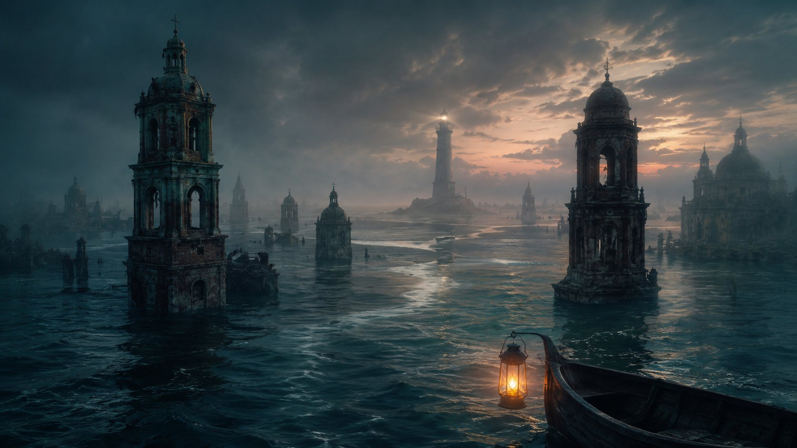
Home
JPContinue
New
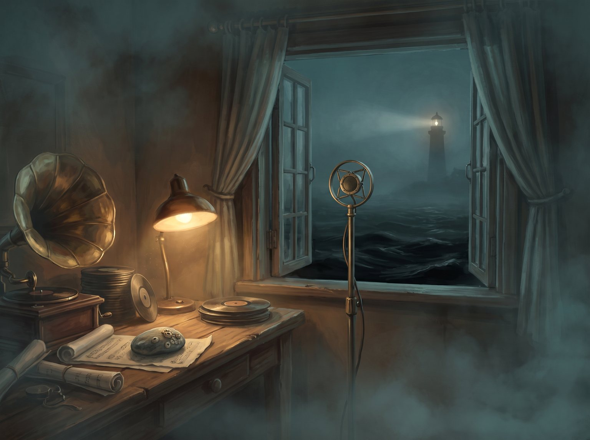
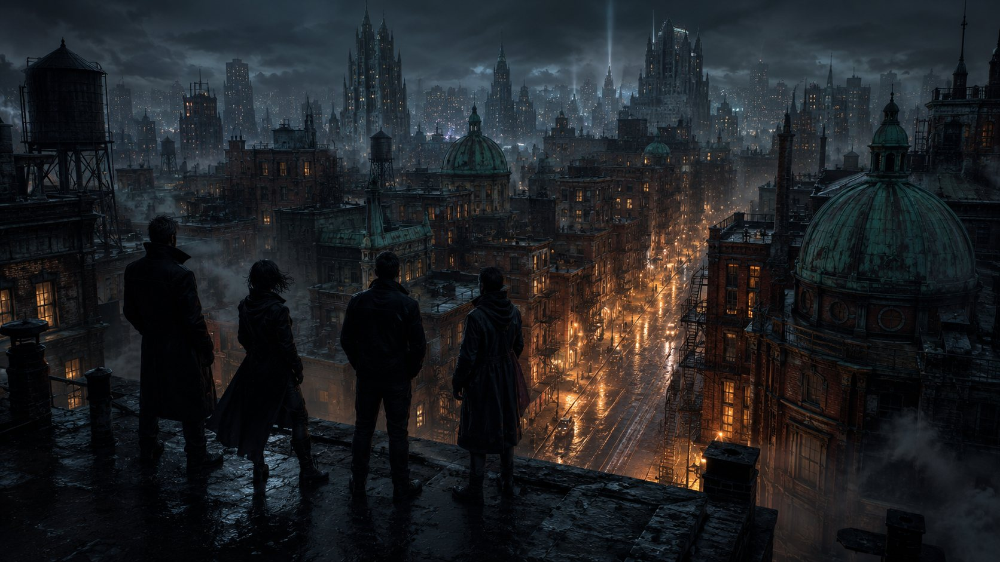
Worlds
The Undersong
Copper Saints
Library
The Undersong
Copper Saints
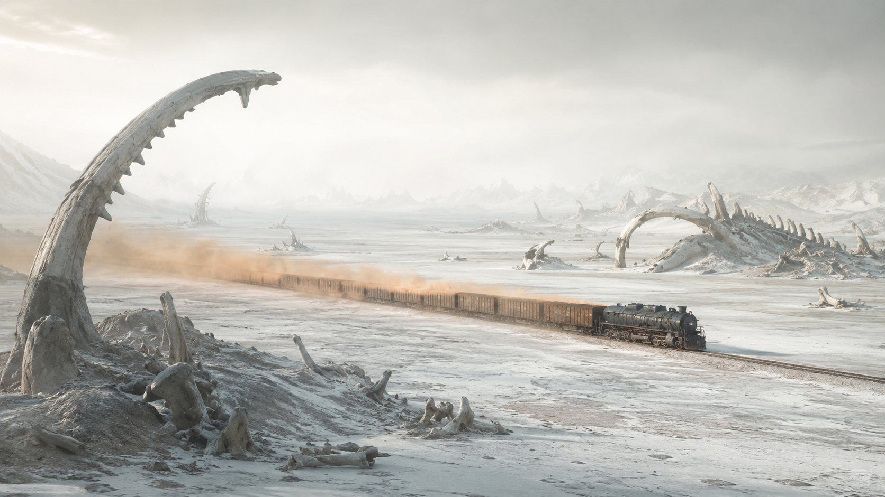
Meridian Dust
The Undersong
Watch
Play
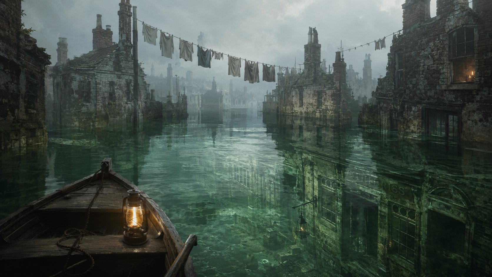
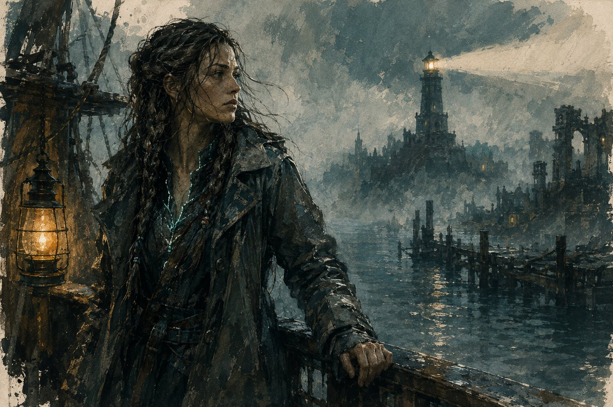
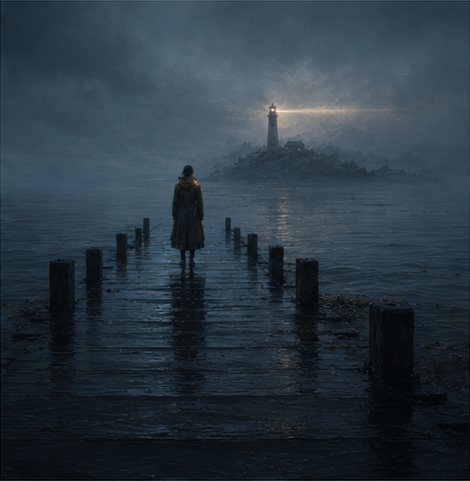
The Tenth Key
Chapters
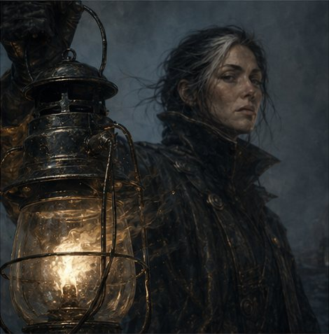
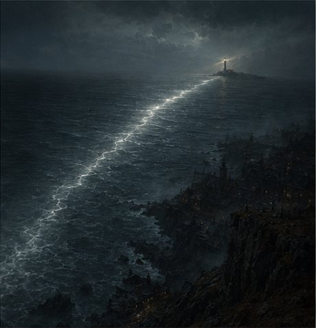
The Bell Watch
Episodes
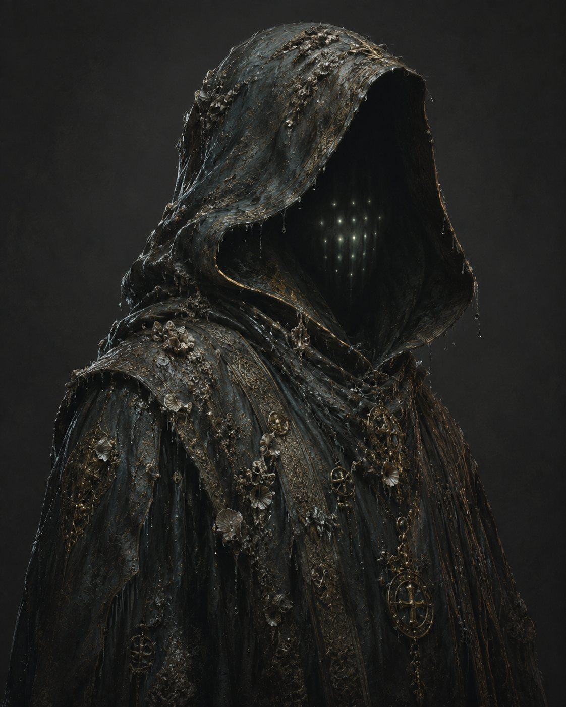
81 · What it plays. Arke Player is a phone app for publications: films, micro dramas, interactive movies, visual novels, audiobooks, audio dramas and books. A publication is a frozen edition with its own manifest (SPEC-048, publication.json). The Player never opens a world’s source: no sheets, prompts, takes, settings or unpublished work reach it, and nothing in it edits, generates or spends.
2 · Two ways in, no gate. Things arrive as a share through an Arke account (P2a) or as a file added from the phone — an Arke package, or a book, a PDF, audio or video in a standard format (P2c, P7). Neither needs the other: a file plays with no account. First open (P1a) is the wordmark over a world’s picture and two presses, Sign in with Arke ↗ and Add a file; no tour, no sentence.
3 · Four tabs. Home, Library, Downloads, You, in a bar 84 high (56 pressable, the rest the home indicator’s), icon over label, the current tab in full ink. A page pushed from a tab keeps the bar. On a Fold the bar becomes an 88-wide rail (P6e).
4 · Home is for going on. Three sections, each absent when empty (P1b): Continue — what is in progress, last played first, at most 8, cards 300 × 169; New — productions added to a shared world since this device last looked, the world on the kind line; Worlds — every world, 240 × 135. A Continue card names the kind, the title and where you are as data (Chapter 7 · 19 min left, 38 min left, Episode 13, The drowned quarter) over a 3-high line of progress. An interactive or visual novel card names its scene and draws no line, because a route has no length (Studio 156). The round press resumes in the player; the card opens the production. Finished things leave Continue.
5 · Library is every world. A card per world, 358 × 190, under the chips All · Shared · Added, with + (Add a file) in the head (P1c). A shared world’s meta line is who shared it and the count (Helen Marsh · 6 productions); an added one’s is Added · 3 productions · 1.4 GB.
6 · A world’s page. The world’s key art as the hero, 300 high under a back press and ⋯, its name in text-3xl, one meta line, and its logline in at most two lines — the author’s words as published, or nothing (P1d). Then its productions grouped by what a person does: Watch (film, micro drama), Play (interactive movie, visual novel), Listen (audiobook, audio drama), Read (a book with no narration). A group with nothing in it is not drawn. A book with its narration is one production, under Listen, its kind line Audiobook · Book. Tiles are 160 wide, 16:9, with title, kind and length, and the line of progress.
7 · A production’s page. Studio 199’s show page on a phone (P1e, P1f): the backdrop, the title in text-3xl, one meta line (Audiobook · Book · 9 h 40 m · Read by Odile’s voice), the primary full width and 50 high — Play, or Continue · Chapter 7 · 12:04 when this device holds a place — then one row: the second way in (Read, for a book with narration), the download with its size, and ⋯ (Start over, Remove download, Details). Under it what it is made of: Chapters or Episodes as rows (a 128 thumbnail with its listened line, the title, the length, a downloaded mark); a micro drama’s episodes as a 4-across grid of 9:16 thumbnails. Cast is drawn only when the publication carries credits.
8 · The dock. Audio that plays while its player is closed docks above the tabs (P1d): 60 high, inset 8, a 2-high progress line on its top edge, the picture of the moment, the title over where, back 15 and play or pause; a press opens the player (Studio 199). Video does not dock: closing its player pauses it and keeps its place, and the phone’s own picture in picture is offered where the system has it.
9 · Theme. The shelves — Home, Library, Downloads, You and the sheets over them — follow the phone’s light or dark. A hero, a picture card and every player are on the media overlay colours whatever the theme (Studio 156, 199).
10 · Words. Labels only: Home, Library, Downloads, You, Continue, New, Worlds, Watch, Play, Listen, Read, Chapters, Episodes, and counts, sizes and times as data. No sentence under a title (Studio 137).
P2 · Getting worlds in — a share through an Arke account, a package from a file
A shared world arrives as a link; a package arrives as a file. Both end as a world in Library.
Shared with you
Shared with you
Library
The Undersong
Copper Saints
Add
Library
The Undersong
Copper Saints
Checking
Inside
Library
The Undersong
Copper Saints
Library
The Undersong
Copper Saints
Meridian Dust
1 · A share opens from its link. A share link opens the Player (an app link; without the Player, its store page). The sheet Shared with you shows the world’s key art and name, who shared it — picture and name — and the count, then Open; signed out, Sign in with Arke ↗ and Not now (P2a). Signed in to an account the share was not made for, the sheet says Not shared with this account and offers Switch account.
2 · Sign-in is the browser’s. As Studio 151: no password field in the Player. The press hands off to the system’s browser sheet, the presses give way to waiting for the browser and Cancel (P2b), and the Player keeps the session. Arke account is the only account it knows.
3 · What a share is. A share gives one account the productions its owner chose from a world, as publications, under the world’s name, key art and logline. The owner can add productions — they appear under New — and can stop sharing. Who and what is set in the Studio, in a Share sheet this master does not draw. A shared production streams from the Arke cloud until it is downloaded (P6a).
4 · A share that ends. The world stays in Library, greyed, with No longer shared and Remove on its card (P2g). Nothing in it opens, and its downloads are deleted the next time the Player reaches the cloud. Its places are kept until Remove, so a share made again resumes where it was.
5 · Adding a file. + in Library, and Add a file on first open, open Add, a sheet of two — Choose files (the system’s picker, several at once) and Paste a link (https only) — and what it takes as one line of data (P2c). A file also arrives from the system’s Open in and Share menus. Accepted: the standard formats of P7, and a world package — a ZIP holding the world’s name, logline and key art and one or more publications, each with its own publication.json — or one publication’s ZIP. The world package is a proposal; its format is owed to SPEC-048 before it is built.
6 · Checked before it is shown. Free space is checked first: a package larger than what is free is refused before it is copied. The Player then copies the file into its own storage and checks every asset’s byte length and SHA-256 against its manifest: Checking, the file’s name and size, a bar, 212 of 418 files, Cancel (P2d). Nothing in a package plays before the check passes.
7 · Ready. The summary is what the manifests say (P2e): the world’s picture and name, made 12 Oct 2026 · 3 productions · 1.4 GB, each production with its kind and size under Inside, the space it takes against what is free, and Add to library. Closing deletes the copy.
8 · Refused in one clause. A refusal is its title (P2f): 3 files do not match, Made with a newer Arke (with Update), Not an Arke package, Needs 1.4 GB · 0.9 GB free. Nothing partial is added and the copy is deleted. Choose another file and Close.
9 · A package is the person’s. An added world is removed only by Remove, needs no account and is never uploaded to one.
P3 · Watching — a film, a micro drama
The Player hosts the players the Studio already draws; a film and a micro drama get the transport a phone needs.
Episodes
40Captions
Size
1 · One player, three homes. The players are Studio 156’s, 174’s and 186’s: the same framework-free modules the Studio previews with and the packages carry (156: one player, two homes). The Player runs those modules and adds only its close (⌄, back to where the player was opened) and the phone’s media session around them — lock screen and headset controls, background audio, picture in picture, casting. What plays in a browser from a package plays the same in the Player.
2 · A film. The picture is the page (156): letterboxed, never cropped, on the overlay colours. Held upright, the picture sits in the middle with the chrome over two scrims (P3a); turned, it fills the height (P3b). A film’s scrubber runs across the whole film, since a film has a length. The transport: Captions, back 10, play or pause 64, forward 10, full screen; the time as 54:40 / 1:32:40; Cast at the top. The chrome rests after 2.5s while playing and never while paused.
3 · A micro drama is a feed. One episode a screen, 9:16, full bleed (P3c). Swipe up for the next episode, down for the one before; a tap pauses. The top holds ⌄ and the production over Episode 13; a column at the right edge holds Episodes, Captions and More, 44 across with their names; a 3-high scrubber sits above the home indicator, the episode’s number and title over it. At an episode’s end the next begins (Autoplay next, on by default, in You).
4 · Episodes. A glass sheet over the picture, which keeps playing (P3d): the count, 1–20 · 21–40, and the episodes as numbered tiles five across, 48 high — seen ones dimmed, the current one inverted. A press plays that episode from its kept place, else its start.
5 · Captions. A sheet of the publication’s text tracks by their label, Off first, the chosen one checked, then Size S · M · L (P3e). The choice is kept on the device and applies to every production that carries that language; one without it plays with captions off.
P4 · Playing — an interactive movie, a visual novel
Studio 156’s interactive player and 174’s visual novel, on a phone and inside the Player.
Route
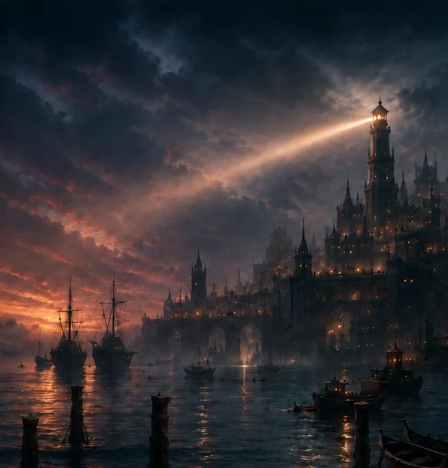
Log
Scene 31 · An interactive movie is 156’s player. On a phone the choices stack full width where the thumb is, 58 high, in authored order, the first in focus, Replay scene under them; captions and the route sit at the top (P4a, Studio 156i). Nothing counts down: untimed is the only built behaviour (156).
2 · The route. A glass sheet over the picture (P4b): each scene watched with its 96 × 54 still, the choice taken between them with Choose again, and Start over. No endings found, no percentages (156).
3 · An ending is a title. ENDING, the ending’s title in text-4xl, the route as stills with the choices taken in one line, then Start again and Back to last choice (P4c, 156e on a phone).
4 · A visual novel is 174’s player. The box above the home indicator, 12 in from each edge, the speaker’s tab and the line in text-lg; a tap anywhere moves on; Auto, Log and ⋯ (Route, Start over) at the top (P4d, Studio 174g). Log is a glass sheet of the scene’s lines up to now, newest last, each with its play (P4e, 174e).
5 · Where you are. A place is kept on the device, per routing version (156f): a scene and a time, or a scene and a beat. On a production’s page Continue names the scene; Start over is in ⋯.
P5 · Listening and reading — an audiobook, an audio drama, a book
Studio 186’s audiobook player with 211’s Slow push and 212’s two lines, an audio drama with its transcript, and the book an edition carries.
Chapters
22Speed
Sleep
The Tenth Key
The key had no teeth. Odile turned it over twice in the lamplight before she understood that it was not meant for a lock at all.
Below the window the harbour lay flat and black. The bells had stopped an hour ago, and the silence they left behind was louder than any of them.
“You found it,” Bray said from the door. He did not come in.
“It found me.” She closed her hand around it. “Where is the tenth door?”
He looked at the water for a long time before he answered.
1 · An audiobook is 186’s player. The picture of the moment fills the top 62% (P5a); Slow push sits under the title as a labelled switch 44 high (Studio 211); Text shows only the current phrase, at most two lines at text-lg, centred above the transport (Studio 212). The transport: previous chapter, back 15, play or pause 64, forward 30, next chapter; under it the speed, the sleep choice and Text. Chapters and ⋯ at the top (Studio 186).
2 · Chapters. A glass sheet (P5b): each chapter’s number, title and length, a check when finished, the playing one with its line of progress, a downloaded mark. A chapter the edition does not hold is not listed: a publication carries only chapters read whole (186).
3 · Speed and sleep. One sheet (P5c): speed 0.8× · 1.0× · 1.2× · 1.5× · 2×, the pitch kept (186); sleep Off, End of chapter, 15 min, 30 min, 60 min. Both kept on the device.
4 · An audio drama. The episode’s picture as a 16:9 card at the top, then the edition’s transcript (Studio 230): the speaker in label caps over the line, the line being heard in full ink and the rest at 46%, a sound cue in brackets and italics (P5d). The transcript follows the audio; a press on a line plays from it. The transport is the audiobook’s, with Transcript and Episodes.
5 · A book. The edition’s EPUB on the shelves’ theme (P5e): ⌄, the chapter, Aa (size; Paper, Sepia, Night) and Contents at the top; the text; at the foot the page in the chapter (12 of 30) with its line, and Listen when the edition has narration. Listen opens that chapter in the audiobook at its kept place, else its start. Reading and listening keep separate places (Studio 224).
6 · The phone’s controls. Audio plays with the screen locked; the lock screen and headset drive it, with the picture of the moment as the artwork (186).
P6 · Offline, You, adult content and the Fold
What is on the phone, the device’s settings, the one gate a share can carry, and the Player open on a Fold7.
Downloads
Shared
Added
You
Copper Saints
Watch
Listen
Home
OfflineJPContinue
New
Worlds
The Undersong
Meridian Dust
Home
JPContinue
New
Worlds
The Undersong
Copper Saints
Meridian Dust
1 · Downloads. A shared production plays from the cloud until it is downloaded; an added package is always on the phone. The tab opens on the space Arke Player takes against the rest and what is free, then Shared downloads — each with its size and a downloaded mark, Downloading · 42% with its line, or Waiting for Wi-Fi — then Added packages (P6a). ⋯ on a row removes it. Downloads wait for Wi-Fi while Wi-Fi only is on.
2 · Offline. Without a network the head of Home says Offline (P6d). What is on the phone plays as ever; a shared production not downloaded is greyed with offline on its kind line and does not open. Places made offline are kept and sent on the next connection.
3 · You. The account — picture, name, address, Account ↗ (Studio 151) and Sign out — then Playback: Captions, Text, Slow push, Autoplay next; Downloads: Wi-Fi only, Storage; Content: Adult content; then About (P6b), in Studio 149’s row grammar. Every setting is this device’s.
4 · Adult content. Off by default. A production its owner marked adult shows blurred, with 18+, and does not open; a press offers Adult content is off with I am 18 or older · Turn on and Not now (P6c). Turning it on is a personal choice made once on this device and undone in You (Studio 154).
5 · On a Fold. At 600 wide and over the tabs become an 88-wide rail, Continue cards are 420 wide and the shelves widen (P6e). A player keeps the picture the page — 16:9 across the top at the full width — with the words and the transport centred under it at 640, the words at text-2xl (P6f). Bands: under 600 a phone; 600 to 1099 a Fold or a tablet.
6 · Implementation boundary. Nothing here is built. The Arke cloud — accounts, shares, streaming — does not exist yet: the Studio’s account seam answers Arke cloud is not available yet. The first build can ship packages, the players and downloads, and take shares when the cloud arrives. The world package and the share model are owed to the specs (SPEC-048, SPEC-025) before either is built.
P7 · Files in standard formats — EPUB, PDF, CBZ, audio and video beside Arke packages
Asked after P1–P6 were drawn: let people add the formats the industry already uses, such as PDF and EPUB. They open in the players already drawn; a PDF or a comic gets a page viewer. P1a and P2c now say Add a file.
Library
Meridian Dust
Files
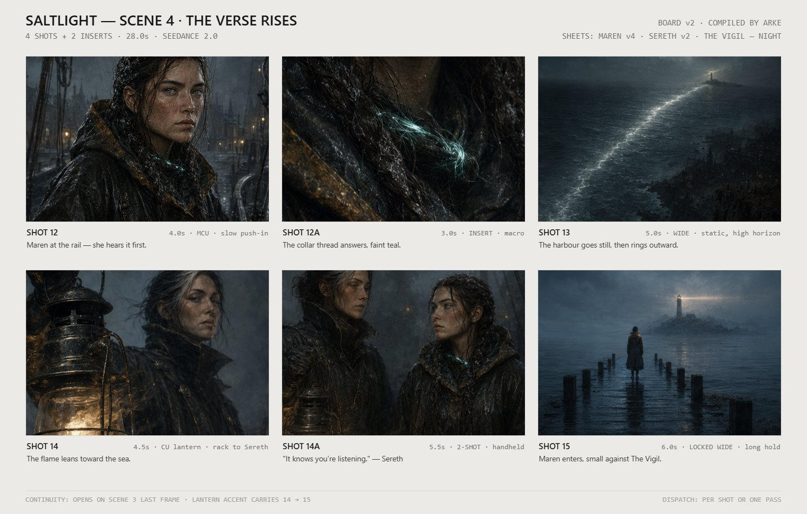
Add
4 filesLibrary
Meridian Dust
Files
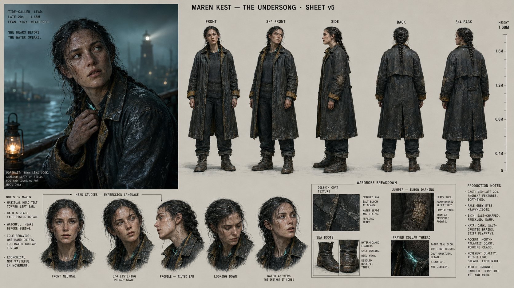
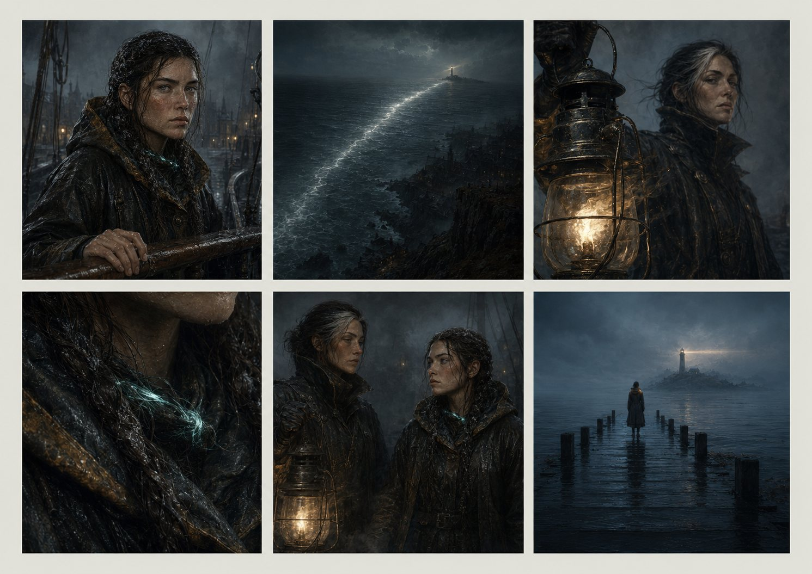
1 · What a phone already has. Add a file takes, beside an Arke package: EPUB for books; PDF and CBZ for documents, comics and boards; M4B, M4A and MP3 for audiobooks and audio; MP4 and MOV for video, with an SRT or VTT of the same name picked beside it as its captions. The Add sheet lists them as one line of data (P2c). Several files can be chosen at once (P7a).
2 · Each opens in a player already drawn. EPUB in the reader (P5e) with its own contents and Aa; PDF and CBZ in the page viewer (P7c); audio in the audiobook player (P7d), an M4B’s chapter markers as its Chapters, else one chapter a file; video in the film player (P3a, P3b), its captions from the file’s own text tracks or its SRT or VTT. The Player shows what the file carries and invents nothing: no Text, no Slow push, no picture beyond the file’s own cover.
3 · Read before it is added. A standard file has no manifest to check against, so the Player opens each one before adding it and reads its format, title, author, cover, length or page count and chapters. Each picked file is a row with what was read (P7a), or a refusal in one clause: Protected file for DRM — store-locked EPUB, PDF and audio are never opened — Can’t open this file, Not a supported format. The press counts what will be added (Add 3); a refused file is left out, never half-added.
4 · Files are not worlds. Library’s Added holds added worlds and then Files, newest first: the cover or first page, the title, the format with the author, pages or length, and the size (P7b). A file has no page of its own: a press opens it in its player, and ⋯ holds Details and Remove. Files join Continue on Home and Added in Downloads (P6a). They need no account, are never uploaded, and go only by Remove.
5 · A PDF or a comic. Pages fit the width on the shelves’ theme, scroll as one column and pinch to zoom; a double tap fits the page again (P7c). The top holds ⌄, the title, Contents when the file has an outline, and ⋯; the foot the page, 3 of 24, with its line. The place is kept on the device. A CBZ reads its pictures in name order as pages.
6 · An audio file. The file’s cover, square and centred on the overlay colours, the title and author under it; a file with no cover shows its title on a plain tile (P7d). The transport, speed, sleep and lock screen are the audiobook’s (P5a); Chapters lists the file’s markers.
7 · Not opened. MOBI and AZW (Kindle’s own formats), DOCX and plain text are refused as Not a supported format. Converting a file is not the Player’s work.
P8 · Before an account, and a library of files only — first open, nothing added, Home and Library with files, You
The MVP (ArkePlayer docs/mvp.md) plays the person’s own audio, books and films with no account and no Arke worlds. P1–P7 always drew an account and worlds beside files; these are the states without them. Drawn at the owner’s word to start M0, and built on without waiting, as the owner asked.
Home
Library
Home
Continue
Added
Library
You
1 · Before an account exists. No control that needs an account is drawn: not Sign in with Arke on first open (P1a), not the picture in Home’s head (P1b), not Shared in Library (P1c), not the account in You (P6b). Each is absent, never disabled. When sign-in arrives those frames return as drawn.
2 · First open. The wordmark over the app’s own picture — bundled with it, since no world exists yet — and one press, Add a file, full width under the thumb (P8a). It opens the system’s file picker directly, several files at once: with only one way in, the Add sheet (P2c) would be a press that leads to one more press, so it returns when it has a second (Paste a link). + in Library and Add a file on an empty shelf do the same. What was picked is read on the sheet of P7a.
3 · Nothing added. Home, Library and Downloads keep their titles and show one state line, Nothing added, over Add a file (P8b). The tabs stay. No picture, no sentence.
4 · Library with files only. With no worlds and no shares there is no All · Shared · Added. The chips are what a person does — All · Listen · Read · Watch, as a world’s groups are — each shown only when a file of its kind exists, and no chips at all when only one kind does (P8c). Rows as P7b: cover or first page at 52, the title, the format with the author, pages or length, and the size; newest first; + in the head; ⋯ holds Details and Remove.
5 · Home with files. Continue as P1 rule 4, then Added: the newest files, at most 10, as 120 squares with the title and the format; a press opens the file in its player (P8d). New and Worlds return with shares and worlds. With files and nothing in progress, Added stands alone.
6 · On a Fold. The rail, and Library’s rows in two columns (P8e).
7 · You before an account. Playback: Captions; Storage: On this phone with its size; About: Version and Licences (P8f). Text, Slow push, Autoplay next, Wi-Fi only and Adult content return with the Arke audiobooks, micro dramas, shares and adult-marked productions they belong to.
8 · Words. Labels only: Add a file, Nothing added, All, Listen, Read, Watch, Added, Continue, Playback, Captions, Storage, On this phone, About, Version, Licences; sizes, lengths and pages as data.
P9 · Worlds to install — first open, Available, a world before and while it installs, the demo world installed
Asked: let the Player show worlds a person can install; one exists, The Undersong. Drawn with no account, beside P8’s states, and with the demo’s real contents. World import was left out of the MVP (ArkePlayer docs/mvp.md), so whether this is built in it is the owner’s call.
Available
The Undersong
The Undersong
Inside
The Undersong
Inside
The Undersong
Inside
The Undersong
Listen
Home
Continue
Added
Available
The Undersong
The Undersong
Inside
1 · What can be installed. Worlds Arke publishes for anyone, needing no account: today one, The Undersong. The list ships with the app — each world’s name, logline, key art, size, and its package’s address and SHA-256, pinned as the Studio pins its Sample world — so it shows offline and needs no Arke cloud. A new world arrives with an update.
2 · Where they are. First open gains a second press, Install a world, under Add a file (P9a). It opens Available, a page of world cards, 358 × 190, each with its count and size (P9b). Home ends with Available, after Continue and Added, its cards 240 × 135 (P9g); with nothing added it sits under Add a file. A world leaves Available when it is installed and returns when it is removed. With nothing left to install, the press, the page and the section are absent.
3 · A world before it is installed. P1d’s hero with one meta line (1 production · 386 MB), the logline, and Install · 386 MB full width, 50 high (P9c). Under it Inside, each production as P2e’s rows — the thumbnail, the title, the kind and length — then Space, the size against what is free. The productions are rows, not tiles: nothing opens before it is installed.
4 · Installing. The press becomes its progress in place (P9d): the line, Downloading · 162 MB of 386 MB, then Checking · 140 of 262 files, and Cancel, which deletes what has come. Free space is checked before the first byte. Every file is checked against its manifest, as a package from a file is (P2 rule 6), and nothing plays before the check passes. Leaving the page does not stop it: Home’s card and Downloads show Installing · 42% with the line. It downloads on any network; Wi-Fi only (P6b) applies when it returns.
5 · Refused in one clause. As P2f, a sheet over the page (P9e): No connection, Download stopped, Needs 386 MB · 210 MB free, 3 files do not match, with the world and its size under it, then Try again and Close. Nothing partial is kept.
6 · Installed. The page becomes P1d’s (P9f): the meta line Installed · 1 production · 386 MB, the productions grouped by what a person does, and ⋯ with Details and Remove. A world with one production shows it at the full width, 358, not as a 160 tile. The world joins Library above the files, under All (P7b), and Home’s Worlds. It is the person’s, like a package from a file: it needs no account and goes only by Remove, which deletes it and its places and returns it to Available.
7 · The Undersong. The demo is The Undersong as Arke publishes it: The Ledger of Nights, sixteen chapters with the narration of twelve, about 3 h 49 m: the Studio’s own EPUB and M4B, published on 20 October 2026. It is one production under Listen, its kind line Audiobook · Book (P1 rule 6): Read opens all sixteen chapters, and Chapters lists the twelve that are narrated (P5 rule 2). The video pilot is unfinished and is not in it. The Player installs it as a world package (ADR 0005), never as the Studio’s Sample world — the 1.6 GB editable world the Studio downloads (ArkeStudio #1949) — which is a world’s source (P1 rule 1). Its package is 182 MB; the frames’ sizes and file counts are samples.
8 · On a Fold. The rail; the key art across the page, 400 high; the words and Install, 320 wide, at the left; Inside and Space in a column 640 wide (P9h).
9 · Words. Labels only: Install a world, Available, Install, Inside, Space, Downloading, Checking, Installing, Installed, Cancel, Try again, Close, No connection, Download stopped; counts, sizes and times as data.
P10 · A world already in Library — another edition replaces it, the same one is refused
SPEC-058 R-21. A world package added from a file (P2c–P2f), such as one made by the Studio’s Export → Arke Player (Studio 233), may be of a world the library already holds.
Inside
Library
The Undersong
Copper Saints
1 · Another edition. When the package is of a world in Library and its edition differs, Ready (P2e) becomes Replace (P10a): the package’s line as ever (made 21 Oct 2026 · 1 production · 228 MB), Inside, then In Library with the installed edition’s date and size, and Space as the difference (+46 MB of 41 GB free). The presses are Replace and Cancel. Newer or older, the two dates say which; nothing warns.
2 · What an edition is. Two packages are the same edition when their edition labels and every file’s SHA-256 agree. Anything else is another edition, so a package made again under the same label is still offered as Replace.
3 · Replacing keeps the places. The new edition is checked in full first (P2d). The old files go only once the new are in place, so Cancel or a refusal leaves Library as it was. Places are kept by chapter: a narration’s place by its chapter id and time, a book’s by its chapter where that chapter still exists, else the production’s start. Continue keeps its card; the world’s card, page and size follow the new edition.
4 · The same edition. Refused in one clause (P10b): Already in Library, with the world and its edition under it, then Open (the world’s page) and Close. The copy is deleted.
5 · Words. Labels only: Replace, Cancel, In Library, Space, Already in Library, Open, Close; dates and sizes as data.
P11 · Worlds to explore — the Worlds tab, a world’s characters, places and lore, and what waits for a chapter
Asked: a Worlds section where people explore worlds and their productions, and read about the characters and some of the lore, starting with the worlds Arke makes available. Approved as drawn by the owner on 22 October 2026; to be specified in SPEC-059. The guide is what a world’s author makes public in the Studio (Studio 234).
Worlds
In Library
The Undersong
Available
Copper Saints
Meridian Dust
The Undersong
Characters
5Places
6Characters
5Places
6Lore
8Maren Kest
Tide-caller. She hears the verse under the harbour and pulls the water where it needs to go. She has paid for it: her left ear is done, and she knows the right is next.
Salt-crusted braids, pale grey eyes, oilskin coat with a bioluminescent thread at the collar.
With
The Vigil
A watchtower of black stone at the harbour mouth, ringed by a rail worn smooth by two hundred years of gripping hands. Lamps burn green-white.
Bells under the water on the worst nights. The rail hums a fifth below the wind.
Here
Lore
The Undersong
Beneath the harbour lies a drowned god, and it is still singing. The song is slow — one verse a season — and the harbour’s luck rises and falls with the verse. Most people have never heard it. Everyone has felt it.
With
Maren Kest
Tide-caller. She hears the verse under the harbour and pulls the water where it needs to go. She has paid for it: her left ear is done, and she knows the right is next.
Salt-crusted braids, pale grey eyes, oilskin coat with a bioluminescent thread at the collar.
With
Characters
5Places
6Lore
81 · Worlds is a tab. The tabs become five, Home · Worlds · Library · Downloads · You, Worlds second (P1 rule 3 amended); on a Fold, the rail (P11i). Worlds (P11a) lists In Library, then Available, as cards 358 × 190, each meta line its productions, characters and, before install, size. It takes the place of P9b’s Available page: first open’s Install a world opens it, and Home keeps its Available section (P9g).
2 · Arke’s worlds, not yet a directory. The worlds are the ones Arke makes available: a list that ships with the app, each package pinned by its SHA-256 (P9 rule 1), growing with each update as more worlds are made. A directory anyone publishes to needs the Arke cloud — accounts, hosting, moderation, takedown, rights and ratings — and is not drawn.
3 · A world’s guide. Characters, Places and Lore, as the author made them public. The guide is small and pinned in the list on its own, so a world can be explored before it is installed (P11b): it is fetched when the page first opens and kept. Installing brings it in the package. Nothing in it is a world’s source (P1 rule 1): no sheets, notes, prompts or open questions.
4 · A world’s page. The hero; then the productions — Install and Inside before (P11b), the groups after (P11c); then Characters as cards 120 wide, 4:5, name and role; Places as P1d’s 160 tiles; Lore as rows, the kind over the title. Each head carries its count. A section with nothing public is not drawn. A character with no portrait shows initials.
5 · A character. P11d: the portrait as the hero, the name, role · world, and Voice with its length — a line from a production in their voice, chosen by the author. Then the sections made public, in the author’s order and words, under their own headings (Essence, Appearance), and With: the characters and places linked, each opening its page.
6 · A place, a lore entry. A place (P11e): the picture, the name, Place · world, its public sections, and Here, the characters linked. Lore (P11f): rows under the chips All · Lore · Rules · Timeline; an entry (P11g) is its kind, its title in text-3xl, the author’s text, and With.
7 · What waits for a chapter. Each character, place, lore entry and section is public from the start or after a chapter of a production. Until this phone’s place in that production — read or heard — passes the chapter, it is drawn as After Chapter 6 with the hidden mark and Reveal: a row in a list, a card with no portrait among the characters, a row in place of a section. Reveal asks once (P11h): the chapter, the production and where you are, then Reveal or Not now. What is revealed or reached stays shown on this phone.
8 · On a Fold. The rail; characters 160 wide, places 280; lore in two columns (P11i).
9 · Words. Labels only: Worlds, In Library, Available, Characters, Places, Lore, Rules, Timeline, Voice, With, Here, Reveal, Not now, After Chapter N; counts, sizes and lengths as data. The sections’ headings and texts are the author’s.
P12 · A world’s newer edition — seen on Worlds and the world’s page, updated in place, its places kept
Asked: when a world’s audiobook is updated in the Studio, does the Player see it and offer the download? Today only a package added from a file does (P10a); a world installed from Arke’s list never shows a newer edition, because the list ships with the app and names no edition. The sample: The Undersong installed at its 20 October edition, Arke’s list naming the 22 October one, made by the Studio’s Export → Arke Player (Studio 233). Approved as drawn by the owner on 22 October 2026, with calls 8 and 9.
Worlds
In Library
The Undersong
Available
Copper Saints
The Undersong
Listen
The Undersong
Listen
The Undersong
Listen
Downloads
Worlds
Added
The Undersong
Listen
1 · Arke’s list, fetched. The list of Arke’s worlds (P9 rule 1) is also kept at one Arke address and fetched over HTTPS when Worlds or a world’s page opens, at most once a day. Each entry names its edition: the label, and its package’s address, length and SHA-256, pinned as before. The list in the app stays as the floor, so Worlds shows offline and never goes back to an older list. A world’s guide alone (P11 rule 3) is fetched again when its pin changes.
2 · A newer edition. An installed world whose edition in the list is not the one installed (P10 rule 2) has an update. Its card on Worlds carries Update (P12a). A world added from a file has no entry in the list: a newer package of it is added from a file, as P10a.
3 · On the world’s page. Update · 228 MB under the logline, full width, as Install (P12b); the meta line keeps the installed edition, Installed · 20 Oct 2026 · 182 MB. Under the hero, New edition with its date and size, and Space as the difference (+46 MB of 41 GB free).
4 · Updating. As installing (P9 rule 4): the press becomes its progress in place, Downloading · 120 MB of 228 MB, then Checking, and Cancel (P12c); Downloads lists it under Worlds, Updating · 53% (P12e). The installed edition stays and plays until the new one is checked in full, then gives way to it as P10 rule 3: the old files go once the new are in place, and places are kept by chapter. While something of the world plays, the swap waits for it to stop.
5 · Updated. The meta line takes the new edition, Installed · 22 Oct 2026 · 228 MB, and the press and the New edition rows go (P12d). Continue keeps its card and its place; the productions show what the new edition holds.
6 · Pressed, not automatic. An update downloads only when Update is pressed: a world is the person’s (P9 rule 6), and an edition can change what they are partway through. Wi-Fi only (P6b) applies to it as to a download.
7 · Refused in one clause. As P9e (P12f): Needs 46 MB · 20 MB free, No connection, Download stopped, 1 file does not match, with the world and the new edition’s date, then Try again and Close. The installed edition is untouched.
8 · Words. Labels only: Update, New edition, Space, Downloading, Checking, Updating, Cancel, Try again, Close; dates, sizes and counts as data.
P13 · Check for world updates now
Requested by the owner: check for world updates immediately, without the daily wait or restarting. This extends the Worlds header of P11a and keeps the update behavior of P12.
Worlds
In Library
The Undersong
Available
Copper Saints
Worlds
In Library
The Undersong
Available
Copper Saints
Worlds
In Library
The Undersong
Available
Copper Saints
Worlds
In Library
The Undersong
Available
Copper Saints
Worlds
In Library
The Undersong
Available
Copper Saints
Worlds
In Library
The Undersong
Available
Copper Saints
1 · One press in Worlds. A round refresh press at the right of the Worlds header, using the existing shelf control, with a minimum 44 × 44 target and tooltip/accessibility label Check for updates (P13a). The same header is used on phone, tablet and desktop (P13e, P13f); keyboard activation works. No new menu or screen.
2 · Immediate, once. Pressing checks the hosted catalogue even inside the daily interval. An automatic check already in progress finishes first; repeated presses never start overlapping requests. Automatic checks retain P12’s daily interval. Manual checks do not download a world.
3 · While checking. The icon becomes a spinner and the press is disabled. A short live status under the header says Checking for updates (P13b). Existing worlds, scrolling and playback remain available.
4 · The result. On success the status says Checked, and every screen uses the newest catalogue immediately. Existing update tags and Update presses indicate which worlds have a newer edition (P13c). Checked means the list was fetched, not that installed worlds were replaced. An older remote list never replaces the newer local or shipped list.
5 · Retry. Offline, a timeout, a malformed list or a save failure says Couldn’t check for updates (P13d). Keep the current list and re-enable the same press for immediate retry; never show Checked for a failed request.
6 · Reading and access. Use existing theme and type tokens. Status wraps at large text sizes and is announced as a live region; controls remain reachable at 200% text, in light and dark themes. No captions under cards, layout redesign or automatic world downloads.
P14 · A picture made for the screen — Wide for a tablet, Tall for a phone
The owner, on 23 October 2026: on a phone the listen screen letterboxes a wide picture into the top 62% (P5a), and the picture should fill the screen. The Studio now makes a moment’s picture in up to two shapes, Wide and Tall, the Tall made from the Wide (Studio 235), and the package carries both. This turn draws only what changes: a phone in portrait on a moment with a Tall picture, Text off (P14a) and on (P14b). The sample is a real Tall picture: The Undersong’s Maren at the ledger, made at 9:16 from its 16:9 picture with the Wide one as the reference, the same face, room, ledger, lamp and window. Approved as drawn by the owner on 23 October 2026, with Studio 235.
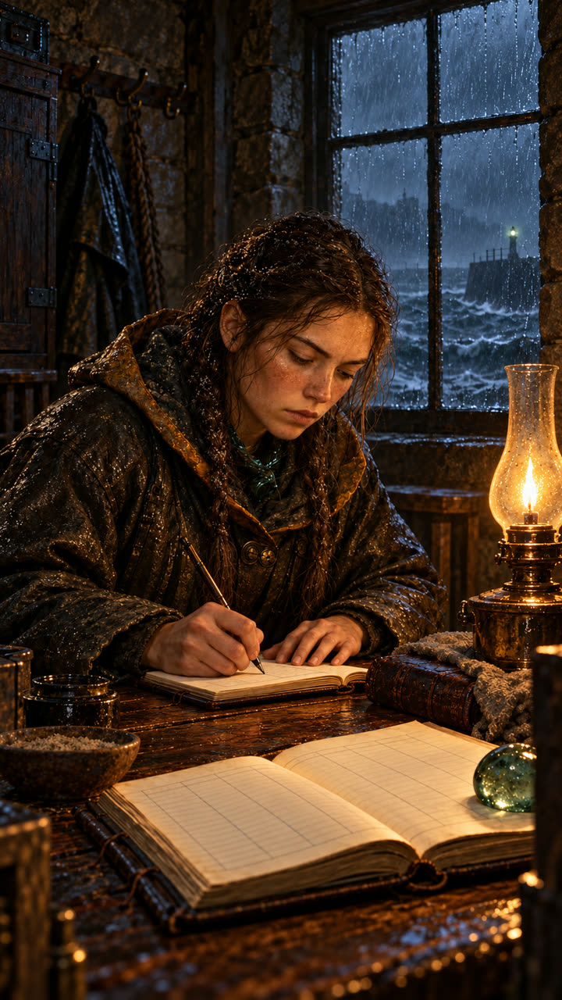
1 · Two shapes, one moment. A moment’s picture comes in up to two shapes: Wide, 16:9, and Tall, 9:16. Both share the moment’s one time and one hold; the Tall is the same picture composed for a phone, never a different moment. The package carries both shapes.
2 · A phone, upright. A phone in portrait shows the Tall picture over the whole screen when the moment has one (P14a), under the top bar, Slow push and the transport, on P5a’s two scrims. A phone is narrower than 9:16, so the Tall picture covers it about its focus and loses a sliver at each side, never a band top or bottom. A moment with no Tall picture shows its Wide one as P5a does: whole, in the top 62%.
3 · Everywhere else, Wide. A tablet, a Fold (P6f) and a phone turned always show the Wide picture, as today.
4 · Text on. With Text on, the words sit over the lower picture where P5a sets them, and the foot scrim deepens under them: 92% of the media background to 240 px from the foot, fading out by 600 (P14b), so they read on a bright picture as on a dark one. With Text off the scrim is P5a’s.
5 · Moving between pictures. The one-second crossfade and Slow push work as before, on whichever shape is shown, about the picture’s focus. Turning the phone mid-hold swaps the shape at once, at the same place in the hold.
6 · Nothing else changes. A package with no Tall pictures plays exactly as today. No setting, no press and no label is added to the Player: the shape follows the screen.
P15 · Discover — what you can get, a world’s kinds of production, and chapters released over time
The owner, on 24 October 2026: should Worlds become Discover, showing worlds, their productions and other things made for them; and a world may release its story a chapter at a time to bring its audience back, so how does the Player show that? And: a world’s page with more than one kind of production, a micro drama among them. Drawn on the five calls approved that day: Discover is what you can get and Library what you have; Discover leads with productions and new chapters; teasers are the author’s choice; a new chapter comes on its own over Wi-Fi; a notification is the phone’s own, per world. Legend of Dumah, The Red Quiet and Embers of the Fallen are Arke’s worlds on Available; The Undersong’s six productions are P1d’s sample. Chapter dates, schedules and episode counts are samples. The author’s half — releasing a chapter and choosing teasers — is Studio 236.
Discover
New chapters
Stories
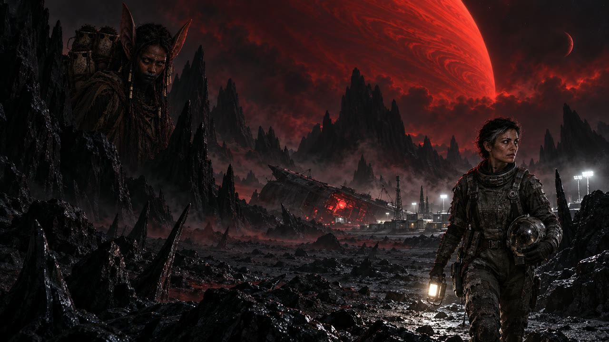
Teasers
Discover
Teasers
Worlds
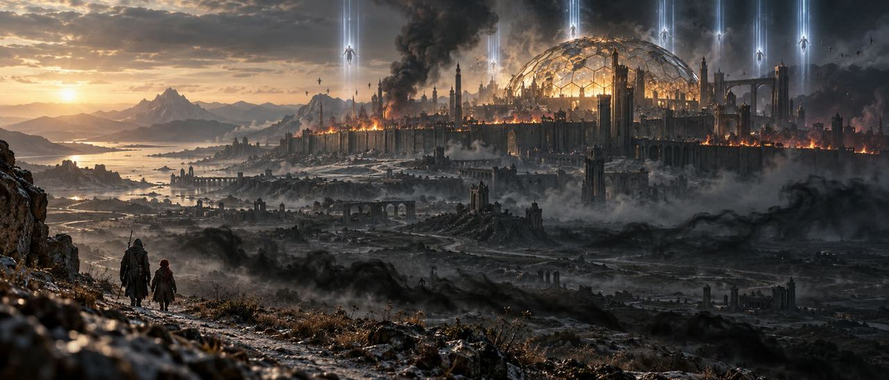
Legend of Dumah
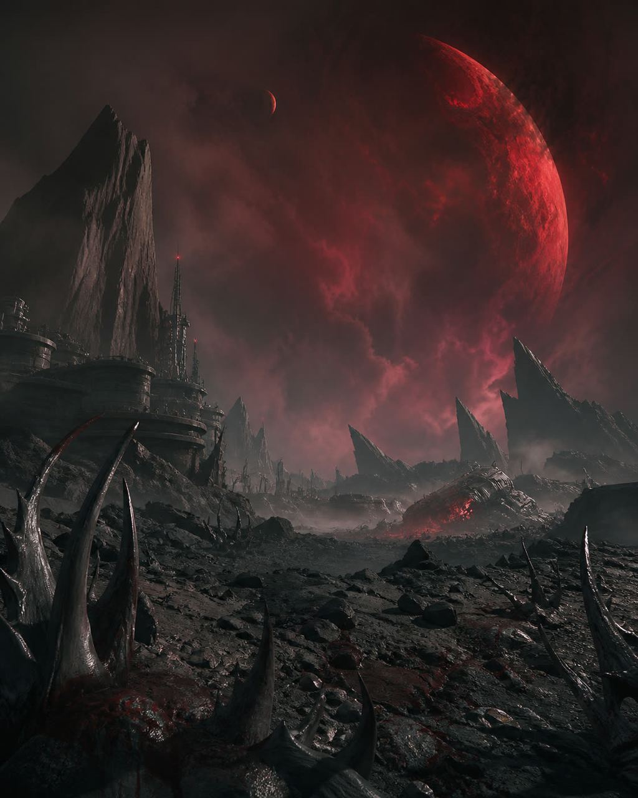
The Red Quiet
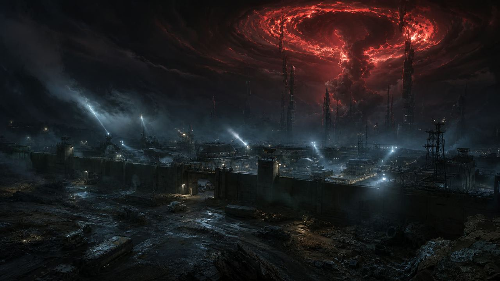
Embers of the Fallen
The Undersong
Listen
2Watch
2Watch
2Play
2Characters
5Whispers from the Void
Chapters
4The Bell Watch
Episodes
45Home
Continue
New chapters
Discover
The Red Quiet
Embers of the Fallen
Library
Worlds
Legend of Dumah
The Undersong
Added
Legend of Dumah
Listen
Legend of Dumah
Downloads
Worlds
Added
Discover
New chapters
Stories
Teasers
Worlds
Legend of Dumah
The Red Quiet
Embers of the Fallen
1 · Discover is a tab. The tabs become Home · Discover · Library · Downloads · You: Discover takes Worlds’ place (P11 rule 1 amended) and is what Arke offers, installed or not (P15a). Library is what is on the phone: installed worlds as cards first, each with New or Update, then added files as P8, under Discover’s chips (P15h). A world’s page is one page from either. P13a’s Check for updates press moves to Discover’s header.
2 · Stories first. Discover’s chips are All · Listen · Watch · Play · Read; then New chapters, Stories, Teasers and Worlds (P15a, P15b). A production’s tile names its kind and its world, and opens the world’s page at that production. An installed world stays in Discover; its meta line says In Library. On a Fold, the rail and the same rows, wider (P15l).
3 · A world’s kinds. A world’s page groups its productions by how they are taken (P15c, P15d): Listen (audiobook, audio drama), Watch (film, series, micro drama), Play (interactive movie, visual novel), Read (book). A production both heard and read sits under Listen. Each head carries its count; a group with nothing is not drawn. A micro drama takes the same tile as a film; its upright episodes are on its own page (P15f). The guide (P11c) follows the groups.
4 · Teasers. What the author picks in the Studio’s Publish, up to six a world: a character or place public from the start, never one that waits for a chapter (P11 rule 7); a picture; or a clip of up to 30 seconds. A picture or clip shows to anyone whatever its chapter, which is the author’s call (Studio 236 rule 4). A character or place opens its page (P11d, P11e); a picture opens full screen; a clip plays muted in the row and with sound when opened. Each leads to its world.
5 · A world in parts. A world’s package becomes its base — the guide, the key art and each production as first published — and one part per release, each pinned in Arke’s list by its SHA-256 as a package is (P9 rule 1). Install fetches the base and every part.
6 · A new chapter arrives. When the list names a part an installed world lacks, the phone fetches it on its own and adds it beside what is there: nothing being played changes. Wi-Fi only (P6b) applies; Downloads lists it under Worlds (P15k). A new edition (P12b) still waits for Update (P12 rule 6 holds for editions; parts only add).
7 · New. A chapter or episode that arrived since its production was last opened carries New: on its row (P15e), its tile, its world’s card in Library, and on Continue once the one before it is finished (P15g). Opening it clears it. Discover’s New chapters is every world’s releases of the last 14 days, newest first; Home’s is the installed worlds’ only.
8 · The author’s schedule. A production may carry its author’s schedule: a day, Fridays, and the next date. It is drawn as written — under the meta, and as a dashed last row, Chapter 4 · 30 Oct (P15e), or Next 26 Oct (P15f). A date that passes with no release drops it, so nothing shown is stale.
9 · Notify. Per world, off until turned on in the world’s ⋯ (P15j); the first one asks the phone’s permission. It comes from the phone’s daily check of Arke’s list (P12 rule 1), so up to a day after the release, names the world, the chapter and the production, and opens the production (P15i). No account and no server.
10 · One tile. Every row in Discover, Home and a world’s page is one tile, 16:9, 240 wide on a phone and 300 on a Fold — the width of a world’s card in a row (P15g, P15l) — whatever it holds: a chapter, a production, a teaser, a character (P15a, P15c, P15d). Mixed sizes and shapes in a page’s rows look unkempt (the owner, 24 October 2026). A character with no portrait shows its initials; one that waits for a chapter is a quiet tile, After Chapter 9. This replaces P11 rule 2’s 120 cards and 160 tiles on a world’s page. A world with one production still shows it at the full width (P9f).
11 · Words. Labels only: Discover, New chapters, Stories, Teasers, Worlds, New, Notify, Waiting, Next; days, dates, counts and sizes as data.
P16 · Rows of different sizes — a feature, posters, wide tiles and a world’s band
The owner, on 24 October 2026, with Netflix’s Home on a phone and a tablet: the boxes of different sizes are great, with emphasis on some titles. Netflix keeps each row one size and changes the size from row to row. P15’s first draw mixed sizes inside a row, which is what looked unkempt, and P15 rule 10 answered it with one tile everywhere; P16 keeps every row tidy and gives the page its emphasis back. The samples are P15’s. Na Love or Juju is Arke’s world as published; its poster is the book cover in the middle of its published cover. Arke’s covers are wide today, so a poster’s Tall cover is call 14. Approved the same day with calls 14 and 15 (the owner: upright is the industry’s norm, and a page can mix and match), and the pill asked to be seen: P16h – P16j. Seeing it, the owner chose the pill (call 16).
Discover
The Ledger of Nights
Install · 1.9 GBNew chapters
Discover
New chapters
Stories
Discover
Teasers
Na Love or Juju


The Undersong
Listen
2Watch
2Characters
5Places
6Discover
The Ledger of Nights
Install · 1.9 GBStories
Discover
New chapters
Teasers
Na Love or Juju
Discover
The Ledger of Nights
Install · 1.9 GBNew chapters
The Undersong
Listen
2Discover
The Ledger of Nights
Install · 1.9 GBStories
1 · A row is one size. Each row is one size and one shape, whatever it holds; a page mixes rows, and the size says how much a row matters (P16a – P16g). Five sizes, phone · Fold: the feature; posters, 2:3, 172 × 258 · 260 × 390; wide tiles, 16:9, 240 × 135 · 300 × 169; small posters, 2:3, 112 × 168 · 160 × 240; the band. This replaces P15 rule 10. Home keeps its Continue cards (P1 rule 4) and Library its world cards.
2 · The feature. Discover opens on one production (P16a): 358 × 476 on a phone, upright, from its Tall cover; 848 × 424 on a Fold, from its Wide cover, the words at the left (P16f). New and the chapter, the title, the kind and world, and one press: Install · 1.9 GB, or Play · Chapter 24 once the world is installed. The card opens the world’s page at the production. The feature is drawn under All only.
3 · Posters. 2:3, from the production’s Tall cover: Stories (P16b) and a world’s Listen and Read (P16d), where audiobooks and books sit. A production without a Tall shows its Wide cover whole over its own blur — Whispers from the Void, Undertow — never cut.
4 · Wide tiles. 16:9 with the title and kind under, as P15: New chapters, a world’s Watch and Play, and Places (P16b, P16e). A chapter, a film or a place is a moment, and a moment is made wide.
5 · Small posters. 2:3: Teasers (P16c) and a world’s Characters (P16e). A character shows its portrait uncut, where P15 cut faces to 16:9. A picture or clip shows its Tall if it has one (P14), else its Wide over its blur. No portrait shows initials; one that waits shows After Chapter 9.
6 · The band. One world across the page (P16c, P16g): its key art blurred behind, on the media colours whatever the theme; the key art small, the name, productions and size, Install, the logline in two lines; then its productions and characters as small posters. One a page, after Teasers.
7 · Which feature, which band. Named in Arke’s list, one line each (call 15). With neither named, the feature is the newest release and the band the newest world.
8 · Words. Labels only: the title and kind under every tile and poster, the feature’s on its picture; Install, Play, New and chapters as data.
9 · The pill. The tabs become a pill floating over the page (call 16; P16h – P16j), in place of P1 rule 3’s bar and P6e’s rail. It holds the same five tabs, 358 × 64 on a phone and 520 wide on a Fold, 24 above the foot, with the current tab in a capsule. The page runs under it to the foot and fades into the page’s ground. A playing chapter’s dock floats above it (P16i). On a Fold, the page takes the full width (P16j). Frames drawn before P16h keep the bar as they were drawn; the pill is what is built.
P17 · Music — an album, a single, a soundtrack, within a world
The owner, on 24 October 2026: if music is supported as a production, or just an artifact, how is it shown within a world? Drawn on the recommendations approved the same day (call 17): music is a production, it has its own group with square tiles, it plays in the audio player with a track list, it is tied to where it is heard and whose theme it is, and a song can be a teaser. The author’s half — a Music production made from Bench takes, its Theme and Song teaser in the Guide, and its export — is Studio 238. The tracks, lengths and lyrics are samples; the covers are pictures already in this master. Approved as drawn the same day, with Studio 238 and its composer, track editor and sequence, and calls 17 – 20.
Listen
2Music
3Watch
2Discover
Stories
Music
Teasers
Songs of the Drowned Quarter
Under the harbour the old bells turn,
salt in the ledger, the lamps that burn.
Count me the tides that the city forgot,
sing me the name that the water has not.
Hold the verse, hold it low,
down where the drowned ones go.
The Chorister
Theme
The voice the harbour keeps. Nobody has seen the Chorister’s face: the verse comes up through the water at slack tide, and every tide-caller learns it by ear.
Chapters
23Music
2Songs of the Drowned Quarter
More from The Undersong
1 · Music is a production. A world’s music is published as a production of one of three kinds: Album, several tracks; Single, one; Soundtrack, several, for one of the world’s productions (Soundtrack · The Bell Watch). A song is never a loose take: as a production it has a cover, a size and a place in Arke’s list, and installs and updates with its world (call 17).
2 · Its own group. A world’s page gains Music after Listen: Listen · Music · Watch · Play · Read, with its count (P17a). Discover gains a Music row after Stories (P17b). Under the chips it sits with Listen: what is heard. Home’s Continue never holds a song.
3 · Square. A music production’s tile is square, 160 on a phone and 200 on a Fold, its title and kind under it (P16 rule 1: a row is one shape). Its cover is made 1:1, at 1024 × 1024, the fourth picture shape beside 2:3, 9:16 and 16:9 (call 18). It comes with the list as any picture does (SPEC-058 R-63).
4 · An album’s page. The cover over its own blur, the title, Album · The Undersong · 9 tracks · 34 min, Play all and Shuffle (P17c). Then the tracks, numbered, each with its length and at most one line: whose theme it is, or where it is heard. The one playing shows bars in place of its number. On a Fold the cover sits beside the title and the tracks run in two columns (P17h). Under them, More from the world: its other music.
5 · Playing. The audio player, with the cover where the moment’s picture would be, over its own blur (P17d): shuffle, previous, play, next, repeat; then Lyrics when the track has words, Tracks, and where it is heard, Chapter 9, which opens the chapter where it plays. The dock and the lock screen show the track and its album, with Next where a chapter has back 15 (P17c). A song keeps no place: it starts from its beginning, and Play all from the first track.
6 · Lyrics. As written, over the dimmed cover, scrolled by hand (P17e); not timed to the song (call 19).
7 · Heard in, and Theme. A track may be heard in a production: its row says so (Heard in · The Ledger of Nights, Chapter 8), the production’s page lists its Music, and a chapter that holds a song carries a note (P17g). A character or place may have one track as its Theme, played from its page under its Voice (P17f). Both are what the author set in the Studio; the Player only reads them.
8 · A song as a teaser. A Song teaser is a track’s excerpt of at most 30 seconds, in the Teasers row as a small poster: its square cover whole over its blur, with a note (P17b). It plays with sound when opened; nothing plays in the row.
9 · Words. Labels only: Music, Album, Single, Soundtrack, Play all, Shuffle, Lyrics, Tracks, Theme, Heard in; tracks, lengths and minutes as data.
P18 · Interactive stories — at their own shape, remembering choices, as packages
The owner, on 28 October 2026: have we designed what interactive stories look like on the Player? P4 had, on 20 October, before the pill, the rows, picture shapes and remembered choices, and it cropped a 16:9 movie to fill an upright phone where P3a letterboxes a film. Since then the Studio’s stories remember (SPEC-063, Studio 240): choices set named facts, other choices open or close on them, scenes play differently, and a route replays. The Studio exports a story only as a web folder, and SPEC-063 leaves an Arke Player format out of scope. P18 brings P4 up to date and proposes how a story reaches a phone (calls 21 – 24). The production it is for is The Red Quiet: First Contact: 202 scene variants, 201 choices, five families of ending. The samples stay The Undersong’s, with Ring Once a 9:16 movie of its own; choice labels and reasons are samples of the author’s words. Approved as drawn the same day, with calls 21 – 24.
Low Water
Your route
Route
8 scenes1 · At its own shape. A story plays at the shape it was made in, and nothing is cropped to fit. A 16:9 movie held upright sits whole a little above the middle, where P3a holds a film, and at a choice the choices take the controls’ place under it (P18b). Turned, it fills the height with the choices over its foot (P18c); on a Fold it runs the width with the choices under it (P18h). A 9:16 movie fills the phone (P18d). This withdraws P4a’s full-screen crop.
2 · The choices. Full width where the thumb is, 58 high, in the author’s order, numbered, the first in focus, Replay scene under them. Two sit side by side only where both labels fit whole: turned, and on a Fold. Three or more are always one list, as in the Studio’s player. Nothing counts down.
3 · A closed choice. A choice can close because of an earlier one: the key was left at the weigh house, so Use the tenth key can’t be taken. Such a choice is hidden unless the author wrote a reason for it. With a reason, it stays in its place, dashed and dimmed, with a dash for its number and the reason under its label (P18d; SPEC-063). The open choices are numbered 1, 2, 3 around it. The facts themselves are never shown: what a story remembers shows only in what it plays and offers (call 23).
4 · The route. P4b’s glass sheet, with stills at the story’s shape: 96 × 54 for 16:9, 40 × 72 for 9:16 (P18e). A long route folds its middle into one row, 5 more scenes, which opens it. Choose again goes back to that choice and takes back everything after it, what the story remembers included. Start over takes back all of it. A production’s page shows the same route under Continue (P18a).
5 · A visual novel. P4d’s box, Auto and Log, on each beat’s picture at its shape. Upright, a beat’s Tall picture fills the phone when it has one (P18f), as an audiobook’s moments do. Without one, the wide picture sits whole at the top and the box under it (P18g). At a choice the last line stays, with the choices under it.
6 · Where you are. The device keeps the route: the choices taken, from which what the story remembers follows, and a place in the scene. Continue replays it on the edition installed. If an update changes the story so the route can no longer be replayed, Continue gives way to Start again.
7 · How it arrives. A story is a production package (SPEC-058 R-68), published beside its world’s edition, so neither the world’s audiobook nor 202 scene variants are downloaded for the other. It holds one story document, compiled from the Studio’s routing: scenes, choices, facts, conditions, effects and what plays when. Its clips or pictures come with it. A Player that can’t read that version of the document shows the story with Update app and never plays part of it (calls 21, 22).
8 · Words. Labels only: Continue, Your route, Route, Choose again, Start over, Start again, Replay scene, Auto, Log, more scenes. Choice labels and their reasons are the author’s.
P19 · A story plays itself — no tap moves on, and a choice is two or more
The owner, on 28 October 2026: “Whenever an option is provided to the user it must be at least two as a minimum”, and an interactive story “should play like a video, going through the video with optional narration and only pausing when an option is displayed. There should not be a need to tap to move forward.” The design said the opposite, and the build followed it: P4d’s tap moved on, P18’s Auto was a toggle, off by default, and nothing kept a lone option off the screen, so First Contact showed 1 Several weeks later as its only button. P19 makes a story play itself and stop only for a real choice (calls 25 – 27). Rules 1 – 5 are shared with a Studio turn drawn the same day. The samples are P18’s, with The Red Quiet’s First Contact as a story without voices; its lines and its choice are the author’s.
Route
7 scenes1 · A story plays itself. A visual novel moves from beat to beat on its own: a voiced beat when its voice ends, an unvoiced beat after time to read it, 1.5 s + 45 ms per character, as shipped (P19a). An interactive movie already plays its clips (P19f). A story opens playing.
2 · No tap moves on. A tap shows or hides the controls, as a film’s do: Play/Pause, Back (the previous beat), Log, and Narration where the story has voices (P19b). Auto is gone; Play/Pause replaces it. This withdraws P4d’s “a tap anywhere moves on”, P18’s Auto, and the › in the box (P4d, P18f).
3 · It stops only for a choice of two or more. Every option shown is one of at least two (P19e). A closed choice shown with its reason counts as one of the two.
4 · A lone option is never shown. When only one way on is open, the story plays straight through to where it leads, with no pause and no label. First Contact’s Several weeks later was one: Open hands now runs straight into The last ordinary shift, whose first line already says it.
5 · Narration is optional. When a story carries voices, Narration is on, and the listener can turn it off. With it off, or in a story without voices, each beat holds for its reading time. The control shows only when the story has voices (P19b; none in P19d).
6 · The controls. Over two scrims, as P3a’s (P19b): ⌄, the story and its scene, and ⋯ (Route, Start over); Narration as a labelled switch under them; then Back, Play/Pause 64 and Log, Play on the centre line, with the scene’s beats over them where a film’s scrubber sits. On a Tall picture they sit above the box; on a wide one, at the foot, where a film’s do (P19c). While playing they rest after 2.5s; paused, they stay. The box is the story, not a control, and never moves when the controls come and go (P19a, P19b). Turned, the controls sit over the picture and the box over its foot (P19g).
7 · At a choice. The story stops with the last line in the box and the choices where the transport was, Replay scene and Log under them; the top stays while it waits (P19e). The choices are P18’s: numbered, the first in focus, nothing counting down.
8 · An interactive movie. Its controls are a film’s (P3a): the scene’s scrubber and time, back 10, Play/Pause, forward 10, with captions and the route at the top (P19f). A movie has no beats, Log or Narration. At a choice of two or more it stops as P18b draws.
9 · The route. A lone way leaves no row: the two scenes it joins sit one after the other, and Choose again belongs only to a choice of two or more (P19h). The lone way is still taken, with whatever it sets, so the route replays. An ending’s choices (P4c) and a production’s Your route (P18a) leave it out too.
10 · Words. Labels only: Narration, Back, Log, Replay scene, Route, Start over. Auto is gone. Lines and choice labels are the author’s.
P20 · A graphic novel — read a page at a time, the way its book turns
Approved by the owner on 29 October 2026 (“Approved, build the player”), calls 28 – 31. The owner, on 29 October 2026, after Studio 247 was approved: “Do the Player side.” A graphic novel (SPEC-064) is a story told in pages: each page one picture with its lettering in it, read in order, left to right, right to left as manga, or as one tall scroll for a webtoon. The Studio exports it as CBZ, PDF and EPUB; P20 is how it reaches a phone and is read there (calls 28 – 31). The sample is The Undersong’s Low Water, drawn, two chapters of 24 pages, and The Lantern Road for Scroll. Its page is composed from the master’s pictures with lettering laid over them; it stands for a generated page.
Low Water, drawn
Chapters
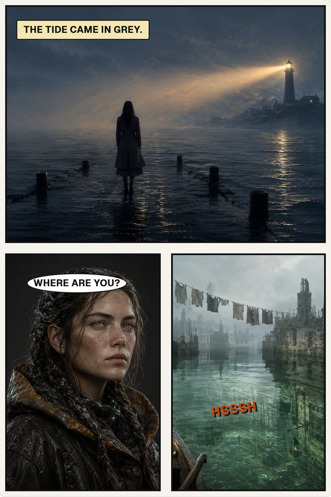
1 · The tideChapters
24 pagesLow Water, drawn
1 · How it arrives. A graphic novel is a production package of its own, beside its world’s edition, as a story is (P18): world package schema 7, one comic document listing the chapters and their pages in reading order, with the book’s reading direction, page shape and language, and each page’s picture with its alt text. Arke’s list pins it under the production’s comic, never package or story, so a Player that cannot read it never fetches it (call 28).
2 · Its page. A world’s graphic novel has a page as a story’s does (P20a): its picture, Graphic novel · 24 pages, Continue with the page you are on, the size, and its chapters as page tiles, 2:3. Discover shows it as any production.
3 · A page whole. A page is read whole, at its own shape, on black, with nothing over it (P20b). It fits the width held upright and the height turned (P20f). Pinch and double-tap zoom into it; a page is never cropped to fill.
4 · A tap: the controls. A tap shows the controls and a second hides them; a tap never turns the page (P20c). At the top: ⌄, the book and its chapter, Chapters, and ⋯. At the foot: 3 of 24 and the book’s progress. They rest after 2.5 s.
5 · Turning. A swipe turns the page, the way the book reads. Left to right, the next page comes from the right; right to left, from the left, and the progress fills from the right (P20d). The book’s direction is the author’s, set in the Studio; the reader does not change it.
6 · Scroll. A webtoon reads as one column, full width, top to bottom, with no page turn (P20e). Its controls are the same, with no page count; the progress is how far down.
7 · Chapters. Chapters lists the book’s chapters with each one’s first page, its page range, and a tick on the one you are in (P20g). Pressing one opens its first page.
8 · Where you are. The device keeps the page you are on, per book. Continue opens it. A newer edition that no longer has that page opens the chapter it was in.
9 · An older Player. A Player that cannot read the comic document shows the book with Update app and fetches nothing (P20h; call 28).
10 · Words. Labels only: Graphic novel, pages, Continue, Page, Chapters, Update app. Chapter titles and every word on a page are the author’s.
P21 · A graphic novel, read with its own controls — a cover, Get, and a way to turn
The owner, on 30 October 2026, reading the published Ledger of Nights, drawn on a Fold7: “Graphic novel UI is broken. We need to revisit the UX thoroughly”, “We need a designed cover for this story”, and the reader “only shows the top half with no way to control the navigation of the story.” The blank book was a fault, mended in ArkePlayer PR 39; this turn is the rest. A graphic novel had no cover, so Discover showed the world’s key art and its page cropped page 1 to a strip. Before it was on the phone a tap did nothing. The reader opened on a page with nothing to say a tap brings the controls, the tap waited for a double-tap, a swipe was the only way on, and a Fold open showed one page between two black bands. Calls 32 – 36. The pages are that package’s own; the cover stands for the one to be made in the Studio.
Discover
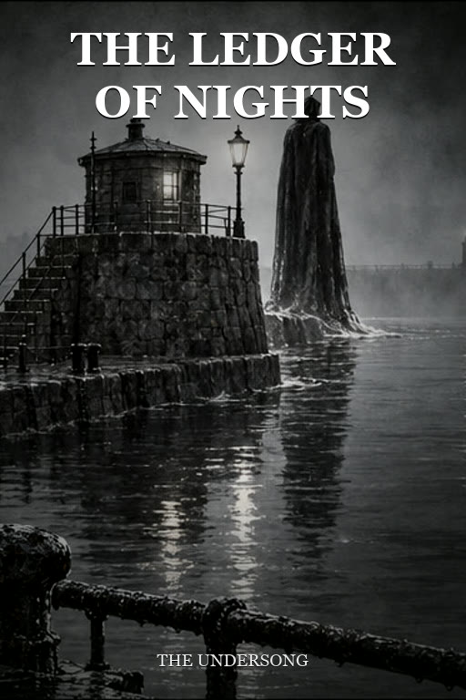
The Ledger of Nights, drawn
Get · 4.3 MBRead
The Ledger of Nights, drawn
Get · 4.3 MBChapters
2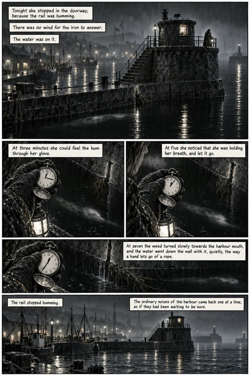
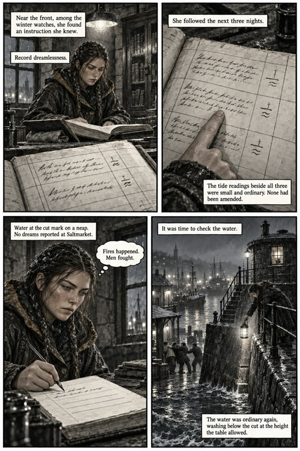
The Ledger of Nights, drawn
Chapters
2The Ledger of Nights, drawn
Continue · Page 3Chapters
2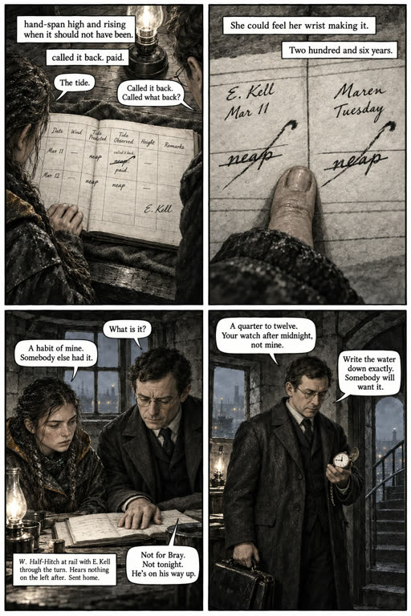
Pages
11 pages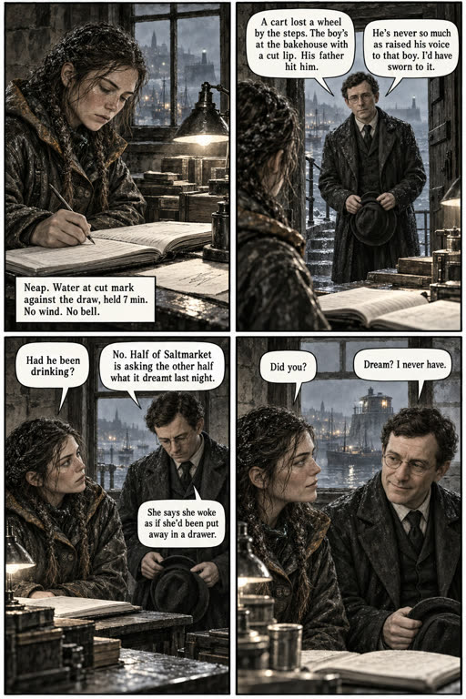
2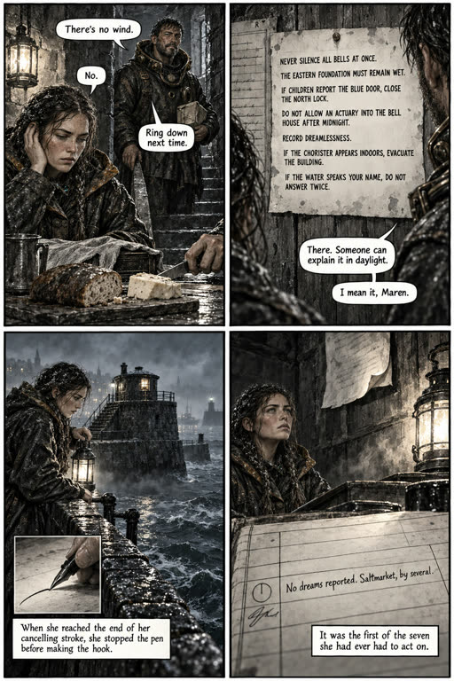
4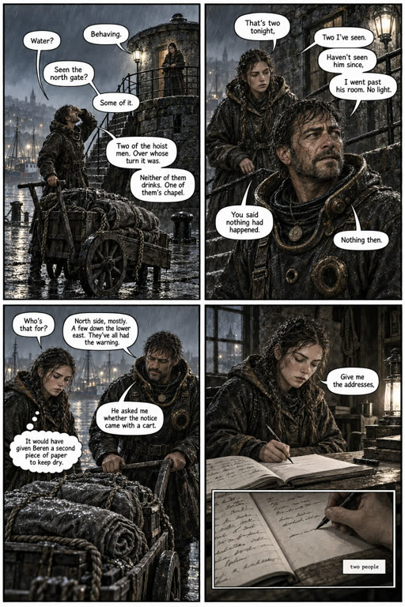
6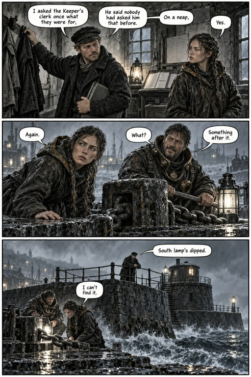
7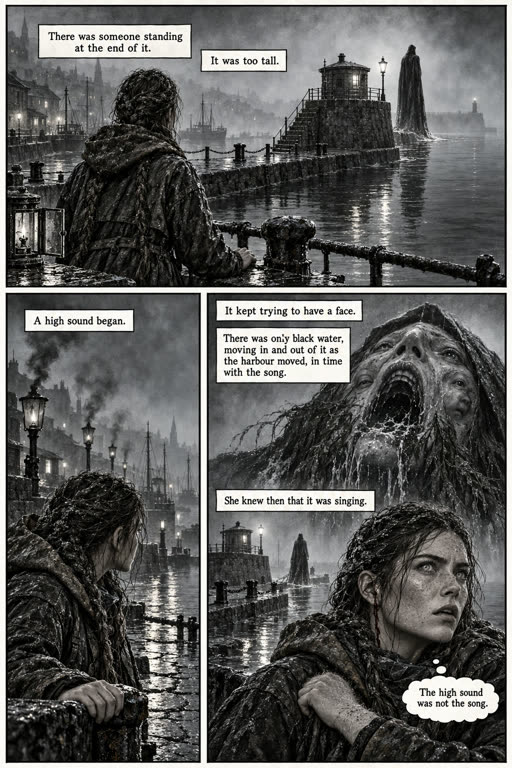
8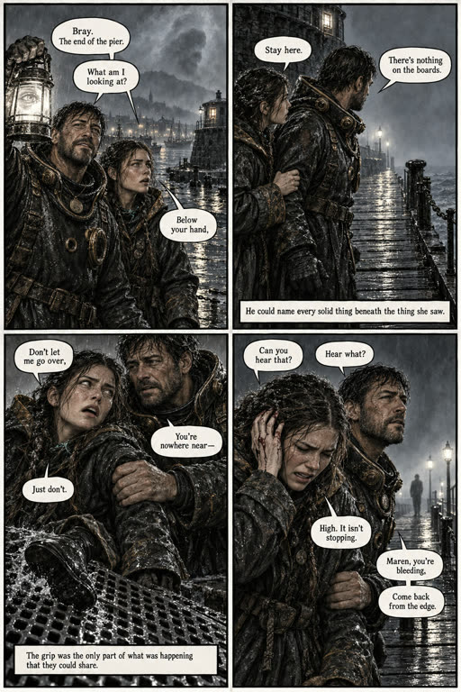
9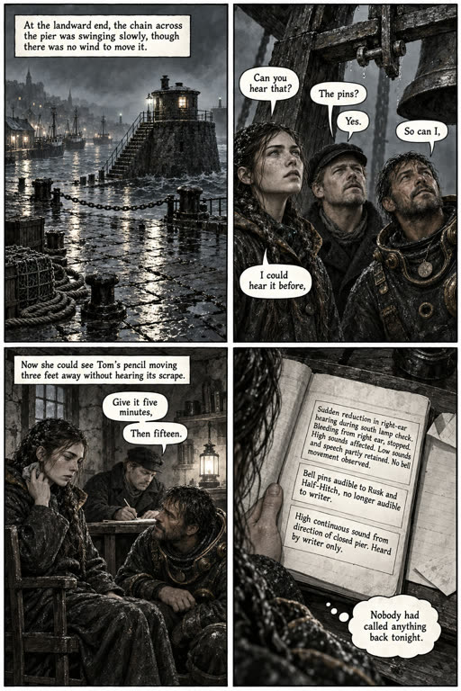
10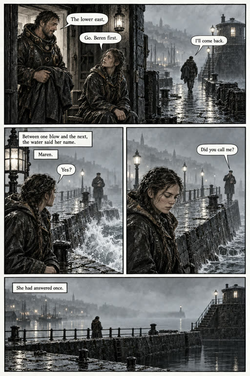
111 · A cover. A graphic novel has a cover: its production’s Tall picture, 2:3, made in the Studio with its title lettered and pinned with Arke’s list as any production’s cover is (P16, call 14). Discover, Read and the book’s page show it whole (P21a). A book with no cover shows its first page whole in its place, never a crop of it and never the world’s key art (call 32).
2 · Its page. The book’s page leads with the cover upright, 168 wide, over its own blur, then its title, Graphic novel · The Undersong · 11 pages and one press (P21b). This replaces P20a’s wide hero, which cut a page to a band.
3 · Before it is here. Pressing the book on Discover opens its page whether or not it is on the phone (call 35). Not here, the press is Get · 4.3 MB (P21b); pressed, the bar and Downloading · 1.6 of 4.3 MB with Cancel take its place, as a world’s install does (P9, P21c); arrived, it is Read, or Continue · Page 3 once begun (P21d). A Get is pressed; it never waits for Wi-Fi.
4 · Chapters as rows. Each chapter is a row: its first page at 56 × 84, its title, its pages, and Page 3 on the one you are in, a tick on one read (P21d). This replaces P20a’s page tiles, whose lettering could not be read.
5 · Opening. The reader opens with its controls showing, and they rest after 2.5 s (P21e); a first-time reader sees how to leave, where they are and how to go on. At the top: ⌄, the book and its chapter, Pages, ⋯. At the foot: back, 3 of 11 over a bar to drag to any page, next.
6 · A tap at an edge turns. Resting, the page is whole with nothing over it (P21f). A tap in the outer 30 % on either side turns the page, the next on the side the book reads towards; a tap in the middle shows or hides the controls. A swipe still turns. This revises P20 rule 4 (call 33). The zones are drawn for the turn only; nothing marks them on screen.
7 · No wait. A tap answers at once. Double-tap zoom goes, so no tap waits to see if a second follows; pinch zooms, and while zoomed a drag moves over the page and an edge tap still turns (call 33).
8 · Pages. Pages, from the top, shows every page by chapter at 104 wide with its number, the one you are on ringed (P21g). Pressing one opens it. It replaces P20g’s Chapters sheet.
9 · A Fold open. A Fold open, or any screen wider than it is tall, shows two facing pages, as a book opens: 1 and 2, then 3 and 4, an odd last page alone (P21h, call 34). A turn moves two pages. Its controls are the phone’s, the count reading 2 – 3 of 11 (P21i). Closed, the Fold shows one page.
10 · Words. Labels only: Get, Downloading, Cancel, Read, Continue, Page, Pages, Chapters. The title and every word on a page or the cover are the author’s.
P22 · Worlds first — a cover and one press, a world’s own page, four tabs
The owner, on 7 November 2026, of “pocket saga with an emphasis on worlds”, then: “Lets leave delivery and work on the design turns”. Pocket Saga is Pocket FM’s short-drama app. It opens on a picture, one press plays, and a series’ world is a line in its description. Arke Player has the worlds, but it opens on a choice between a file and an install, and a world’s page is a shelf of formats with the world at its foot. This turn takes the pace and keeps the worlds, and the look stays Arke’s. Everything drawn is Arke’s list as published, serial 49: covers, names, sizes, and the people and counts of each world’s guide. Genres and ages are samples, because the list has neither, except Na Love or Juju’s 18+, which is the owner’s. Delivery is as it is: a world is downloaded whole before it plays. Calls 37 – 45. Approved by the owner with P23 – P27 on 7 November 2026: “All approved. Lets go ahead with the build.”
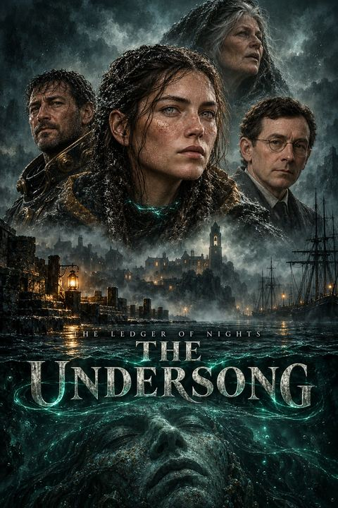
Romance18+New chapters
Stories
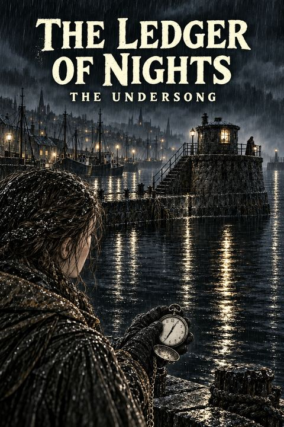
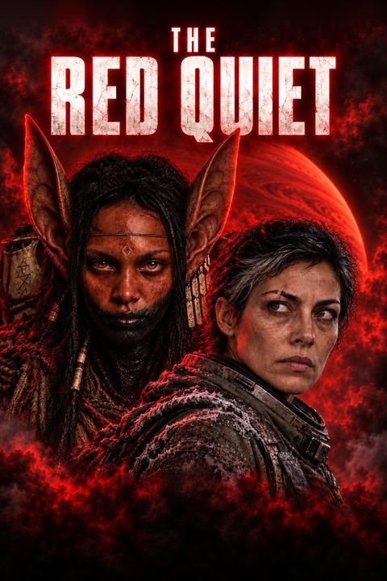
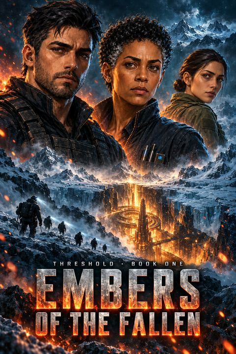
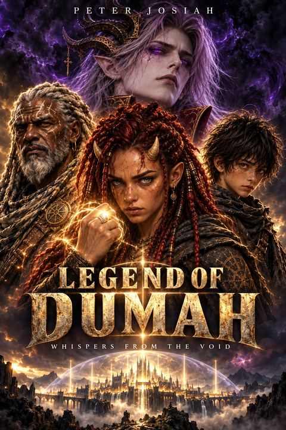
Teasers

Na Love or Juju
Continue
New chapters
Worlds
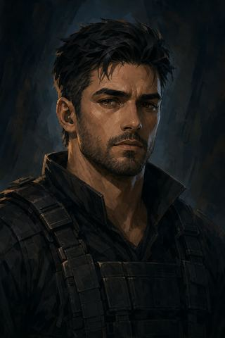
Thriller16+Worlds
The Undersong
Na Love or Juju
Legend of Dumah
The Red Quiet
Romance18+Genres
Characters
Characters
Places

Chapters
The Undersong
Na Love or Juju
Romance · 1 title18+Library
Na Love or Juju
The Undersong
The Red Quiet
Library
Romance18+New chapters
The Undersong
1 · Home is the door. The app opens on Home (P22a). There is no first-open screen: P8a and P9a go, and Add a file moves to Library (P22m). The head is the wordmark, small, and Search (call 37).
2 · A cover, whole. Home opens on worlds, a cover at a time, 300 × 450 with the next at the edge. A Tall cover is lettered with its name, so nothing is set over it and the name is not set again (call 38). Under it: three of its people, its genre, its age, one press and Notify. Arke’s list orders them, as it names the feature (call 15). A world with no Tall cover shows its key art with its name.
3 · Start. Start · 1.1 GB is the one press, in place of Install everywhere (call 39). It downloads the world, its progress in the press’s place (P9d). Arrived, it is Play; begun, Continue · Chapter 3. It opens the first title in the list at its beginning, or the one the list names. The size stays on the press while the press spends it.
4 · Notify comes forward. P15’s Notify leaves ⋯ for a round press beside Start, filled when on, before a world is on the phone as well (P22a, P22i). The phone still does the telling (call 13).
5 · Home’s rows. Coming back, Continue comes first (P22c), then New chapters, then covers, Stories, Music, Teasers and one band (P22b). Discover’s rows move here at P16’s sizes. Added leaves Home for Library.
6 · A page’s colour. Home and a world’s page take their colour from their own picture’s blur, on the media colours whatever the theme: Home the first cover’s, or the world you are in (P22c); a world’s page its key art’s (P22h). Nothing is computed or stored, and no new token is needed (call 45).
7 · Four tabs. Home, Worlds, Library, You, in the same pill (call 40). Worlds takes Discover’s place. Downloads becomes a chip in Library (P22l). Check for updates becomes a row in You, and leaves Discover’s head (P13a).
8 · Worlds. Every world as a card, 358 × 202: key art, name, genre, titles, characters, three of its people, its age (P22d). The chips are genres, from the list, and a chip with no world is absent (call 41). Format chips go: they asked what you want to do, not what you like, and Watch has nothing today.
9 · Its age. Every world carries its age from the list, on a cover, a card and its page. An 18+ world stays in plain view like any other: on Home, in Worlds and Search, its page, its people. Nothing is blurred or hidden. The question comes only when someone wants the title itself: Start, Play or Read asks once, I am 18 or older · Start, before anything downloads (P22e). Answered, this phone asks no more, and Adult content in You turns it back off (call 42). This revises P6’s rule, whose blur goes.
10 · Search. Search reads Arke’s list and each world’s guide on the phone, with no account: worlds, titles, characters, places, lore and chapters (P22g). A waiting entry is not found until it is reached or revealed. Empty, it shows genres and characters (P22f, call 43).
11 · A world’s page. The page leads with the world: its key art melting into its blur, its name, three of its people, its genre, titles and age, its logline in two lines, one press and its tabs (P22h). The tabs are Story · People · Places · Lore, counted, and an empty one is absent: Embers of the Fallen has Story and People. Space leaves the page for ⋯.
12 · Story. Titles as posters in one row, each with its kind (P22h). Past six they group as Listen · Music · Watch · Play · Read (P15 rule 3). A world of one title shows its chapters at once, because that world’s page and that title’s page are one page (P22i, call 44).
13 · People, Places, Lore. People is a grid of upright portraits, three across, one that waits showing its chapter (P22j). Places is wide tiles (P22k). Lore is P11f. Each opens its entry as P11 does.
14 · Library. Library is what is on the phone, under Worlds · Files · Downloads (P22l). Its + is Add a file, and an empty Files says Nothing added with the press (P22m).
15 · A Fold. Covers keep their size and more of them show (P22n). A world’s words keep to the left over its key art, and its posters are 260 wide (P22o). The pill is P16j’s.
16 · Words. Labels only: Start, Play, Continue, Read, Notify, Search, the tabs, the genres, I am 18 or older. Title replaces production on screen, and Installed and In Library go.
P23 · A world’s rewards — teasers to swipe, and what you find
Pocket Saga’s reward is a coin, and its cost and daily limits are what its reviews complain of most. Arke’s reward can be the world: reaching a chapter hands you someone new. The phone already counts what you have reached (P11 rule 7), so none of this needs an account or a server. Of the five published worlds only Na Love or Juju has teasers, six of them, and all five have people, so a feed of teasers alone would be almost empty (call 46). Who waits for which chapter is that world’s guide as published. The voice line is a sample.
Maren Kest
Gold on Gold
Bell House

Na Love or Juju
Romance · 1 title18+ New
New
Continue
New in your worlds
NewNew chapters
1 · The feed. A teaser fills the phone (P23a – P23c). Pressing one in Home’s Teasers opens it, and a swipe up moves to the next, across every world; down goes back. It holds a world’s chosen teasers first, then its open characters and places (call 46).
2 · What a teaser is. A character: the portrait, name, role, and a line of its voice where it has one. A clip: its Tall picture, or its Wide over its own blur, with sound (P23b). A place: its picture and name (P23c). A song: as P17b. A teaser never shows an entry that waits for a chapter. An 18+ world’s teasers show without asking, so its author chooses ones that suit anyone.
3 · Its foot. The world stays at the foot with its name, genre, age and Start · 72 MB, the same press as P22’s, which asks once on an 18+ world (P22e). Pressing the name opens the world’s page.
4 · Its rail. Voice or Sound, on until pressed; Notify; World. Nothing plays in a row, only once opened (SPEC-058 R-78).
5 · Someone new. When a chapter you pass brings an entry out of waiting, one card comes over the player for 5 s: New, its kind, its name and its picture (P23e). It never pauses what plays. A press opens the entry and the chapter keeps playing in the dock.
6 · The count. A world’s page shows 10 of 17 found, and People 8 of 14 (P23f, P23g). Everything open from the start counts, and so does anything revealed. It is a measure of the world, never a score: no streak, badge, level or coin (call 47).
7 · New. A found entry keeps New until it is opened, and comes first in People (P23g). Home adds New in your worlds as small posters after Continue (P23h).
8 · Reveal stays. Reveal (P11h) works as it did, one entry at a time. A waiting portrait stays hidden behind its chapter (P22j).
9 · A Fold. A teaser keeps its upright shape, centred over its own blur (P23d).
10 · Words. Labels only: Character, Clip, Place, Song, New, found, Voice, Sound, Notify, World, Start.
P24 · Episodes and the upright player — a chapter cut on its turns
A chapter runs 20 to 35 minutes and Pocket Saga’s episode a few. Arke’s narration is already most of the way there: in Na Love or Juju’s first six chapters, 129 of 130 pictures have a Tall, one every 51 to 100 seconds, and at about three minutes each its 12 h 21 m makes some 250 episodes. An episode needs no new audio or picture, only a cut. The cuts and episode titles here are samples, on chapter 1’s real pictures and words; the Ledger’s date is a sample too. The Studio’s half is a turn of its own. Calls 48 – 50.
Na Love or Juju
Romance · 248 episodes18+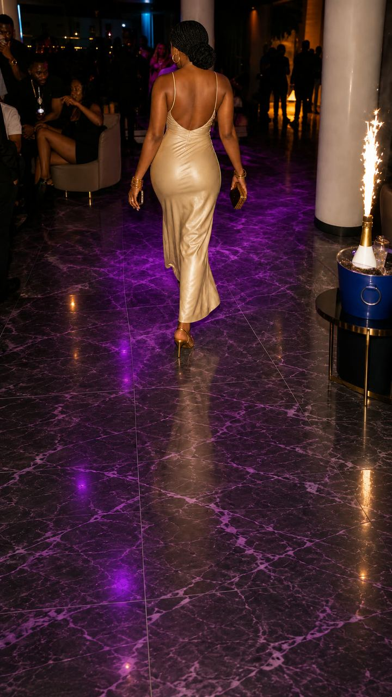

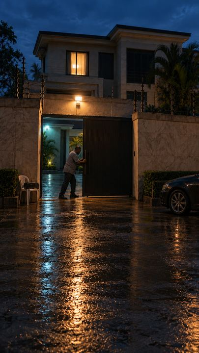
Here
3Episodes
248Caught up
In this world
1 · An episode. An episode is a stretch of a chapter’s take, about three minutes, cut in the Studio on a turn in the story, with its own title (call 48). The audio and pictures are the chapter’s. Until a title has cuts, its chapters are its episodes, and this player plays them whole.
2 · The list. Episodes replace chapters on the Story tab, in ranges of 50, grouped by chapter (P24a, P24b). A row: an upright picture, 44 × 66, its number and title, its length. A tick on one heard; the one you are in is marked, with its time left and Resume.
3 · At rest. The Tall picture fills the phone (P24c). At the foot, the words if Text is on, the episode and the title, and a thin line of its time. At the right, the rail. Nothing else. A Tall picture is shown as P14 shows it.
4 · It moves on. It plays like a video: the next episode comes on its own at the end, with no tap. A swipe up moves to it, a swipe down to the one before (P24g). A tap never moves on (P19 rule 2).
5 · A tap. A tap pauses, and brings the controls (P24d): ⌄, the title and episode, ⋯, back 15 and forward 15, the bar with its times, and speed, Sleep and Text. They rest after 2.5 s of playing.
6 · The rail. Here · Episodes · Notify (call 49). No likes, comments, counts or shares: those need a server, and a zero reads as a dead room.
7 · Here. Here shows who is in this moment, with their role, and opens to their entry while the episode plays on (P24e); its foot opens the world. Nobody still waiting is shown. It needs the Studio’s scene cast (SPEC-044) carried in the listening document. Until then it shows who the chapter has reached.
8 · Episodes. Episodes rises over what plays, in the same ranges, the one playing marked (P24f).
9 · Caught up. After the last released episode: Caught up, the next date from the title’s schedule (P15e), Notify, and In this world, its people and places (P24h). That is the moment to send someone into the world.
10 · Turned, and a Fold. Turned, the Wide picture fills the screen and the rail stays at the right (P24i). A Fold open shows the Wide picture whole, the rail at the right; Here or Episodes opens beside it (P24j), and its head, a tap on the picture or ⌄ closes it. The owner, 8 November 2026: drawn always open, it hid the picture and could not be closed.
11 · One player. This is P3c and P3d as well: a micro drama plays in the same frame with its clips. It replaces P14a for a title in episodes. A chapter opened whole keeps the audiobook player.
12 · No money yet. Every episode is free to everyone here: no coins, wait timers, ads or locks (call 50). How Arke earns is a turn of its own.
13 · Words. Labels only: Here, Episodes, Notify, Resume, Caught up, In this world, Sleep, Text. Episode titles are the author’s.
P25 · A brand-new install — nothing to set up, and dark from the first moment
The owner, on 7 November 2026: “Keep both themes but leave dark as default”, and “show a brand new install state”. This is what someone sees in their first minute, with nothing on the phone and no account. It leans on what already ships with the app: Arke’s list, with its covers and key art. Each world’s guide comes over the network, so its people arrive a moment later. Call 51. Tablets are in P26a, P26p and P26r.
New chapters
Romance18+New chapters
Stories
Teasers
Na Love or Juju
New chapters
New chapters
Library
You
Stories
1 · Nothing to set up. No tour, no sign-in, no question. The wordmark for as long as the app takes to open (P25a), then Home. A press never needs an account.
2 · There at once. The covers, names, genres, ages and sizes ship with the app, so Home is whole on the first frame (P25b). Nothing on it waits for the network.
3 · The people arrive. Each world’s guide, 1 to 4 MB, is fetched on first open. As one lands, its faces come in beside its genre, and Teasers and Search’s characters fill (P25c). No spinner marks this, and what has not landed is absent.
4 · Nothing of yours yet. Home has no Continue, no New in your worlds and no Worlds in progress; it starts at the covers (P25c). Continue appears after the first play.
5 · The first Start. Pressed, the download takes the press’s place on the cover, Downloading · 74 of 185 MB with Cancel, and the page stays free to browse (P25d). A pressed Start does not wait for Wi-Fi, as a Get does not (P21 rule 3); that is why its size is on the press. Arrived, it says Play (P25e). An 18+ world asks first (P22e).
6 · The first Notify. The bell’s first press brings the phone’s own permission prompt, and nothing of ours before it.
7 · Library, brand new. Worlds says No worlds yet with a press to the Worlds tab (P25f). Files says Nothing added with Add a file (P22m). Downloads shows the storage bar alone.
8 · Dark by default. Both themes stay. A new install is dark whatever the phone’s setting, and Theme · Dark · Light in You changes it (P25g, call 51). This revises P1 rule 9, where the shelves followed the phone. Heroes, picture cards and players stay on the media colours in either theme, and the reader keeps its own Paper, Sepia and Night.
9 · With no connection. The list and its pictures still show, with no faces. The head says Offline, and each press reads Start · No connection, dimmed (P25h). When the connection returns, they read as P25b, with nothing to press.
10 · Words. Labels only: No worlds yet, Nothing added, Downloading, Cancel, Play, Offline, No connection, Theme, Dark, Light.
P26 · A tablet — Home, Worlds, Search, a world, Library and You
The owner, on 7 November 2026: “show me the designs for the tablet view for all the pages”. A tablet has only ever had the Fold’s layout, because the app has one wide band, from 600. It defines a second at 1100 and has never used it. So a tablet upright is already close, and a tablet sideways is undesigned. Frames are 1280 × 800 sideways and 800 × 1280 upright, a common Android tablet’s size. Call 52. P27 draws everything that plays.
Romance18+New chapters
Stories
Teasers
Continue
New chapters
Worlds
Worlds
The Undersong
Na Love or Juju
Legend of Dumah
The Red Quiet
Embers of the Fallen
Romance18+Genres
Characters
Characters
Places
Chapters
The Undersong
Na Love or Juju
Romance · 1 title18+Na Love or Juju
Romance · 248 episodes18+Na Love or Juju
Romance · 1 title18+NewThe Undersong
The Undersong
Maren Kest
Tide-caller. She hears the verse under the harbour and pulls the water where it needs to go. She has paid for it: her left ear is done, and she knows the right is next.
Salt-crusted braids, pale grey eyes, oilskin coat with a bioluminescent thread at the collar.
With
Library
Na Love or Juju
The Undersong
The Red Quiet
Library
Library
Worlds
You
Romance18+New chapters
Stories
Worlds
The Undersong
Na Love or Juju
Legend of Dumah
The Red Quiet
Embers of the Fallen
The Undersong
NewLibrary
Na Love or Juju
The Undersong
The Red Quiet
You
1 · Two bands. Upright, a tablet is in the Fold’s band, 600 to 1100, and takes its layouts (P26s – P26x). Sideways, from 1100, it is in the wide band, where a world’s page changes shape (call 52).
2 · Nothing grows. Rows keep the Fold’s sizes: covers 300 × 450, posters 260, wide tiles 300, small posters 160. More fits; nothing gets bigger (P26a, P26b). The pill keeps 520, centred.
3 · Home. The covers run across, four and an edge sideways, two and an edge upright (P26a, P26s). Continue cards are 420 wide, three across (P26c).
4 · Worlds. Cards are 16:9, three across sideways and two upright, and they end with the list (P26d, P26t).
5 · Search. Genres run four across (P26f). Results take a column for each kind, so everything found shows at once (P26g).
6 · A world, sideways. The world stays at the left, 460 wide: its key art melting into its blur, its name, people, age, logline and one press. Its tabs and what they hold scroll at the right (P26h). So Start and Continue never leave the screen, on any tab (P26i – P26m).
7 · Its tabs. Story: posters, or a world of one title’s chapters (P26i). Episodes run two across (P26j). People: five across (P26k). Places: two across (P26l). Lore: rows (P26m).
8 · A character. The portrait stays at the left with its name and Voice, its words at the right (P26n).
9 · Library and You. Library’s worlds use Worlds’ grid (P26o), and an empty one its state, centred (P26p). Downloads is rows with the storage bar (P26q). You is two columns sideways and one upright (P26r, P26x).
10 · Sheets. A sheet keeps a phone’s width, 560 and centred, so a question never stretches across the screen (P26e).
11 · Upright. The covers and rows as sideways. A world’s words sit left over a full-width key art, its tabs under it, as P22o (P26u). People five across (P26v).
12 · Words. As P22 and P23. A tablet adds none.
P27 · A tablet, playing — teasers, episodes, stories, books and music
The same request, for everything that plays. Sideways, the Wide picture has the room a phone never gives it, and what rises as a sheet on a phone sits beside the picture, so the story never leaves the screen. Upright, a tablet is tall enough for the Tall picture, which P14 kept for phones. Call 53. The Wide picture is Juju’s chapter 1, and First Contact’s is its published cover. The book’s words, the album and the Ledger’s date are P5’s, P17’s and P24’s samples.
Maren Kest
Gold on Gold

Caught up
In this world
The Tenth Key
The key had no teeth. Odile turned it over twice in the lamplight before she understood that it was not meant for a lock at all.
Below the window the harbour lay flat and black. The bells had stopped an hour ago, and the silence they left behind was louder than any of them.
“You found it,” Bray said from the door. He did not come in.
“It found me.” She closed her hand around it. “Where is the tenth door?”
He looked at the water for a long time before he answered.
“Under the Vigil,” he said at last. “Where it has always been. You have walked over it more times than you know.”
She put the key in her coat and did not look back at the window. Somewhere under the floor, very far down, one bell moved and did not ring.
Songs of the Drowned Quarter
Under the harbour the old bells turn,
salt in the ledger, the lamps that burn.
Count me the tides that the city forgot,
sing me the name that the water has not.
Hold the verse, hold it low,
down where the drowned ones go.
Here
3Maren Kest
1 · The shape follows the screen. Sideways, a Wide picture fills the screen, cover fit about its focus (P27c). Upright, a phone-shaped screen shows the Tall (P27o): a tablet held upright now counts, revising call 10 for it (call 53). A Fold open, nearly square, keeps the Wide.
2 · A teaser. A portrait stays upright, centred over its own blur (P27a); a clip with a Wide picture fills the screen, its world at the foot left (P27b). Upright, it fills the tablet (P27q).
3 · An episode. As P24: the words and the title at the foot left, the rail at the right, a thin line of its time (P27c). Someone new comes at the top left, 400 wide (P27d). A tap pauses, the transport centred and its bar under it (P27e).
4 · Beside it, not over it. Sideways, Here and Episodes sit beside the picture in a panel 380 wide, with Notify at its head (P27f, P27g). The picture keeps playing beside them, its foot unmoved, and the panel opens from the rail and closes from its head or a tap on the picture, as on a Fold (P24 rule 10). Upright, Here is a centred sheet (P27p).
5 · Caught up. The cover and the next date at the left, In this world four across at the right (P27h).
6 · The rest. A chapter opened whole keeps the audiobook player (P27i). A visual novel fills the screen, its box 760 wide (P27j). A graphic novel opens two pages, as P21 rule 9 does, and one upright (P27k, P27r). A book sets two columns, and one upright (P27l). An album keeps its cover beside its title (P27m), and a song its lyrics beside its cover (P27n).
7 · Turning it. Turning a tablet changes the layout and nothing else: what plays keeps playing, and it keeps its place.
8 · Words. As P19, P21 and P24. A tablet adds none.
P28 · A title’s kind at its corner
The owner, 8 November 2026: “a corner badge on top of the story images to denote the type, e.g. audio book, novel, graphic novel, interactive story, micro drama, movie”. Home’s Stories mixes audiobooks, comics, interactive and filmed titles, and today only the grey line under each poster tells them apart. Call 54. Low Water, The Lantern Road, The Bell Watch, Undertow, Saltlight and The Tenth Key are the fixture’s sample titles; the rest are published.
Stories
Teasers
Music
Listen
2Watch
2Music
1Play
2Read
2Stories
Na Love or Juju
Stories
Teasers
1 · The mark. A title’s poster or tile carries its kind at its top right: an icon in a round of glass, 26 across (22 on a small poster), in the overlay’s ink whatever the theme (P28a). The line under it still says the kind in words, so the mark is learned from it (call 54).
2 · The set. Headphones, Audiobook. An open book, Book. Panels, Graphic novel. A forking arrow, Interactive movie. A speech bubble, Visual novel. An upright screen, Micro drama. A clapperboard, Film. A microphone, Audio drama (P28b, P28c).
3 · One mark. A title of two kinds is marked by how it plays: an audiobook with its book is headphones.
4 · Where. Every title’s poster and wide tile: Home’s Stories and New chapters, a world’s Story tab, its band, Library’s titles (P28b, P28d). Music’s squares carry none (P28c). Never on a world’s cover or card, a character, a place, a teaser, Continue (its eyebrow says the kind), Search’s rows (their line says it), or music’s squares, as a square is already music (P17 rule 3).
5 · Beside the tags. New, Update and Update app keep the top left, and the mark never moves for them (P28d).
6 · A tablet. The same mark at the same size: posters do not grow (P26 rule 2) (P28e).
7 · Words. None on screen. Each mark’s kind is said to a screen reader, as the line under it already is.
P29 · A character, for readers — a description for everyone, the rest after the story
The owner, 8 November 2026: a character’s page shows what the author used to make the story — Na Love or Juju’s Appearance was written for the picture model — while their real description waits for the last chapter, because it gives the ending away. “A character description, something that we want readers to read… available to all readers, regardless of how much they’ve read… at the end of the story, we unlock all the sections.” Call 55. Ife, Ade’s House and the sections’ words are Juju’s published guide, which links no one, so neither page has With or Here; the descriptions are drafts for the owner to change. The Studio’s half is Studio 274.
Ife
Late twenties, and in no hurry about anything. Ife never asks a man for a thing, and men give her everything anyway: the flat, the car, the gold at her ear and wrist. Ade Akinola sees her across a club on Victoria Island and is sure he is the one doing the choosing.
Ife
Late twenties, and in no hurry about anything. Ife never asks a man for a thing, and men give her everything anyway: the flat, the car, the gold at her ear and wrist. Ade Akinola sees her across a club on Victoria Island and is sure he is the one doing the choosing.
Ife
Late twenties, and in no hurry about anything. Ife never asks a man for a thing, and men give her everything anyway: the flat, the car, the gold at her ear and wrist. Ade Akinola sees her across a club on Victoria Island and is sure he is the one doing the choosing.
She cannot make a man want her — she can only make wanting her cost him everything.
Late twenties, and already unhurried about it. She learned early that a woman who explains herself has begun to negotiate, so she stopped explaining.
Everything on her was bought for her, and worn well. Silk slip dresses that move a beat after she does. Heavy gold at the ear and the wrist, the kind that has a sound.
Ade’s House, Ikoyi
High walls, two floors and a great deal of window, in Ikoyi. Everything in Ade’s house was earned, and everything in it works, down to the generator that never stutters.
Ife
Late twenties, and in no hurry about anything. Ife never asks a man for a thing, and men give her everything anyway: the flat, the car, the gold at her ear and wrist. Ade Akinola sees her across a club on Victoria Island and is sure he is the one doing the choosing.
1 · A description, for everyone. First under the hero, the author’s words for a reader meeting them: up to 400 characters, no heading, in text-md (P29a). It shows the moment the character does, whatever has been read, so it gives nothing away past the chapter where they are met. It is written for this page in the Studio’s Guide, never a sheet’s section (Studio 274). A character with none starts with the row.
2 · The rest, after the story. Every section the author made public — an Essence, an Appearance, a past — waits for the end of the story, together, in one row: After the story, the count as data, 2 sections, and Reveal (P29a). No section waits for a chapter of its own: this revises P11 rule 7 for sections (call 55).
3 · The story. One title of the world, named by the author in the Studio’s Guide: for Na Love or Juju, the book and its audiobook, read or heard. It ends when its last chapter is finished on this phone. A story still coming out waits for its last chapter (call 56).
4 · Reveal. Asks once, as P11 rule 7 does: After the story, the story and where you are, Chapter 3 of 26, then Reveal or Not now (P29b). Revealed or finished, it stays open on this phone (call 57).
5 · Finished. The row goes, and the sections follow the description under their own headings, in the author’s order and words (P29c). Theme and With keep their places after them.
6 · Meeting someone. A character or place that waits for a chapter still does: its card and page come when they are met (P11 rule 7, P22j, P23 rule 7). Only sections lose their own chapter.
7 · A place. The same: a description under the picture, its sections after the story, then Here (P29d) (call 58). Lore is unchanged: an entry is its statement, from the start or after a chapter.
8 · A tablet. Sideways, the description heads the right column and the row follows it (P29e), as P26n.
9 · Search. Finds a description as it finds a name. A section waiting for the story is never found (call 43).
10 · Words. Labels only: After the story, Reveal, Not now; counts and chapters as data. The description, and the sections’ headings and words, are the author’s.